Code
# Datas de início e fim
dataini <- as.Date("2025-04-01")
datafim <- as.Date("2025-06-29")Universidade Federal Da Paraíba
Professor: Sinezio Fernandes Maia
O relatório a seguir tem como objetivo apresentar um estudo sobre cinco ativos financeiros, buscando analisar o seu potencial de lucro, o comportamento no cenário econômico atual e, em especial, o nível de risco associado a cada um deles.
Este estudo é direcionado a investidores avessos ao risco (perfil conservador), cujo foco principal é a preservação de capital e a estabilidade nos retornos. Como explica Hal Varian (no livro Microeconomia: Uma Abordagem Moderna, Cap. 12) destaca que o investidor avesso ao risco prefere a certeza do valor esperado de sua riqueza em vez de apostar em alternativas incertas, mesmo que com possibilidade de maior retorno. Em outras palavras, a estabilidade tem mais utilidade para esse perfil do que a chance de ganhos elevados acompanhada de riscos significativos de perda.
Nesse sentido, a análise dos ativos busca identificar aqueles que, dentro da teoria moderna de finanças, apresentam a melhor relação risco-retorno, ou seja, a combinação de menor variância dos retornos (Markowitz) com perspectivas de retorno positivo. Assim, este relatório pretende oferecer ao investidor conservador uma visão fundamentada que auxilie na escolha racional e segura de investimentos diante da incerteza do mercado.
Organizando o ambiente:
# Datas de início e fim
dataini <- as.Date("2025-04-01")
datafim <- as.Date("2025-06-29")A LocaWeb ((lwsa3))é uma das principais empresas brasileiras de serviços de hospedagem, cloud computing e SaaS, posicionando-se como uma player relevante no setor de tecnologia. Empresas de tecnologia são altamente sensíveis ao ciclo econômico, mas se beneficiam de tendências estruturais de longo prazo, como a digitalização de negócios. A companhia tem enfrentado um ambiente competitivo intenso, com margens pressionadas pela guerra de preços e pela necessidade constante de inovação, o que eleva seu risco operacional. Seu alto endividamento para financiar aquisições e investimentos também é um ponto de atenção.
A Eletrobras (elet6) é uma das maiores empresas do setor elétrico da América Latina, atuando principalmente na geração e transmissão de energia. Trata-se de um setor essencial e perene, com receitas altamente previsíveis reguladas por contratos de longo prazo, o que confere maior estabilidade e menor risco ao ativo. Após sua privatização, a empresa busca ganhos de eficiência e redução de custos, potencialmente melhorando seus indicadores financeiros e a distribuição de dividendos.
A Itaúsa (itsa4) é uma das maiores holdings de investimento do Brasil, com uma carteira diversificada e focada em setores perenes, como financeiro (Itaú Unibanco), industrial (Alpargatas, Dexco) e de saúde (Hospital Albert Einstein). Esta diversificação confere resiliência aos resultados, alinhando-se à filosofia de investidores conservadores que buscam exposição a ativos de qualidade com menor volatilidade. A companhia é conhecida por sua disciplina capital e por ser uma histórica pagadora de dividendos sólidos.
A Localiza (rent3) é líder no setor de aluguel de veículos no Brasil, um segmento cíclico e sensível ao desempenho da economia, do crédito e do turismo. A empresa possui um modelo de negócio robusto, com vantagens de escala e uma gestão eficiente de sua frota, mas sofre pressão em cenários de juros altos, que elevam seu custo de capital. Seu endividamento é elevado, porém é considerado estrutural para financiar o crescimento da frota.
A BRF(brfs3) é uma gigante global do setor de proteínas, detentora de marcas icônicas como Sadia e Perdigão. O setor de alimentos é altamente competitivo e vulnerável a volatilidade nos custos de commodities (milho, soja) e a cenários macroeconômicos desfavoráveis, que impactam o poder de compra do consumidor. A empresa tem trabalhado para reduzir seu elevado endividamento

A análise técnica do ativo, construída com base em séries temporais de preços ajustados, utilizou um método clássico de identificação de pontos extremos de mercado — mínimos e máximos históricos — que servem como referência para a interpretação de tendências e a definição de suportes e resistências.
Mínimo representa o ponto em que o preço atingiu o seu valor mais baixo em determinado período. A marcação desse ponto permite identificar regiões onde a pressão compradora prevaleceu, funcionando como um suporte natural.
Máximo corresponde ao ponto em que o preço alcançou o valor mais alto, sugerindo áreas de resistência, onde a pressão vendedora foi dominante.
O código não apenas destaca esses pontos no gráfico, mas também traça uma linha entre eles, o que auxilia na visualização de uma tendência primária do ativo: quando a linha se inclina positivamente, sugere um viés de alta; quando inclinada negativamente, indica viés de baixa.
Essa metodologia dialoga com a Teoria de Dow, ao considerar que os preços se movimentam em tendências identificáveis e que os extremos de preço funcionam como marcos psicológicos do mercado. Todavia, por ser uma abordagem restrita a máximos e mínimos, deve ser complementada com indicadores técnicos adicionais (como médias móveis, RSI ou Bandas de Bollinger) e com a análise de volume, para confirmar a força da tendência.
Na prática, o objetivo é fornecer uma visualização intuitiva dos pontos críticos do ativo, permitindo que o investidor trace hipóteses sobre zonas de compra (próximas ao suporte) e de venda (próximas à resistência), sempre levando em consideração a relação risco-retorno associada.
O ativo apresenta uma tendência indefinida, oscilando em um canal lateral, sem força compradora ou vendedora dominante. O suporte relevante está em R$ 5,80 e a resistência próxima em R$ 6,50 (dados de 27/06/2025).
Conclusão: o movimento lateral reflete incerteza dos investidores, indicando que o papel pode permanecer congestionado até a confirmação de rompimento. Para investidores avessos ao risco, a atratividade é baixa, já que o retorno potencial é limitado e o risco de rompimento desfavorável existe.
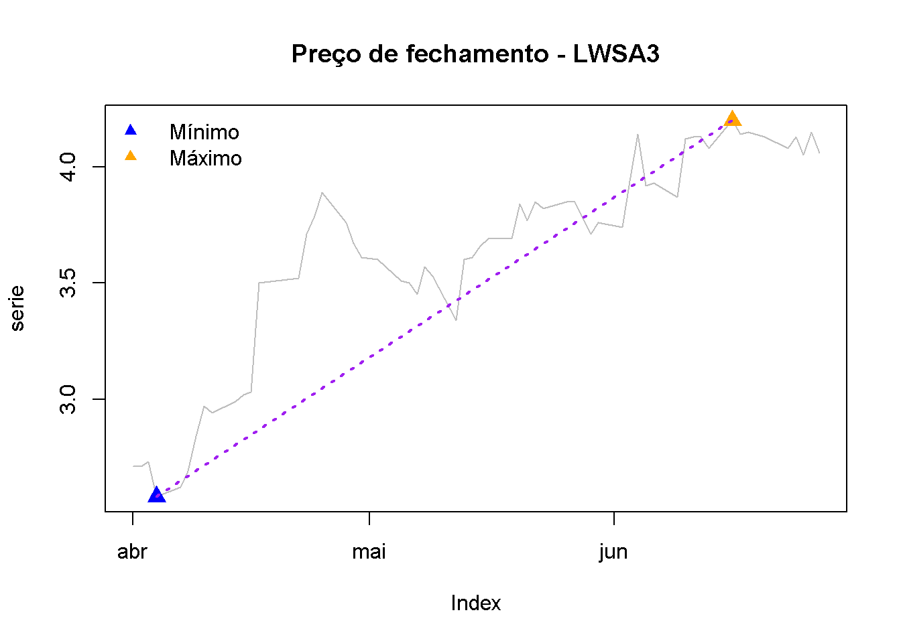
Pelo ponto de vista gráfico, a ação apresenta uma tendência de alta consistente, apoiada por sucessivos topos e fundos ascendentes. O suporte firme se encontra na região de R$ 44,00, enquanto a resistência imediata está em R$ 48,50 (dados de 27/06/2025). Conclusão: a configuração atrai investidores focados em retorno total (valorização + dividendos), pois o ativo mantém força compradora. Contudo, a proximidade da resistência exige atenção a sinais de reversão ou realização de lucros.
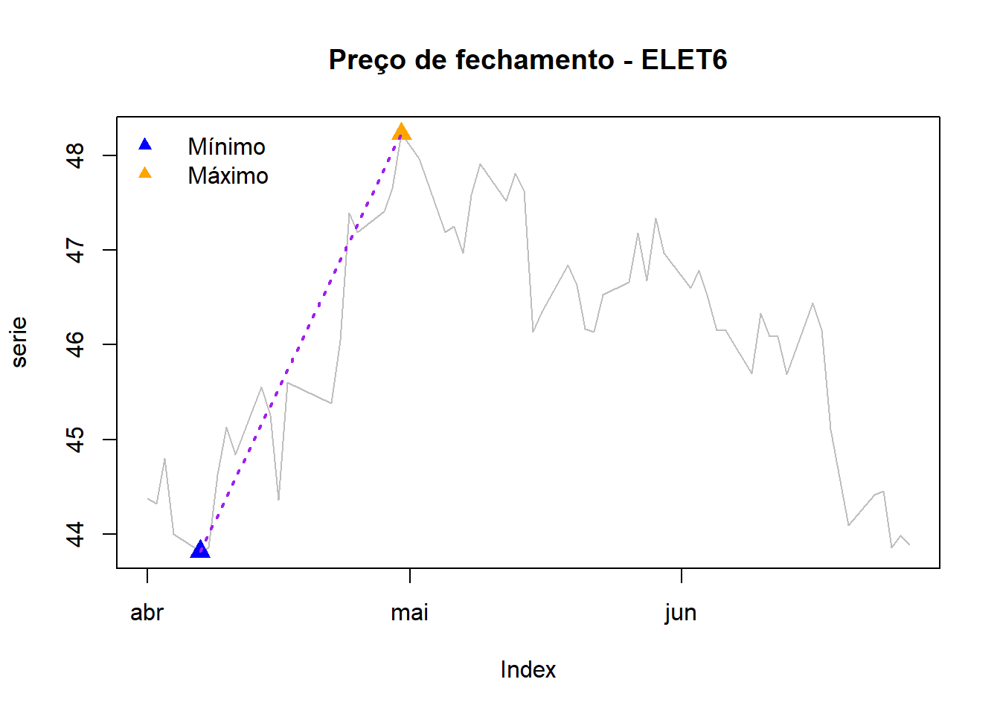
Graficamente, a ação opera em uma tendência de alta moderada, mas de menor inclinação em relação a outros papéis do setor financeiro. O suporte se mostra consistente em R$ 9,90, com resistência no patamar de R$ 10,80 (dados de 27/06/2025).
Conclusão: o movimento sugere um ativo estável e com baixo risco relativo, adequado a investidores com perfil conservador. O potencial de valorização é limitado, mas a probabilidade de manter suporte torna a relação risco-retorno equilibrada.
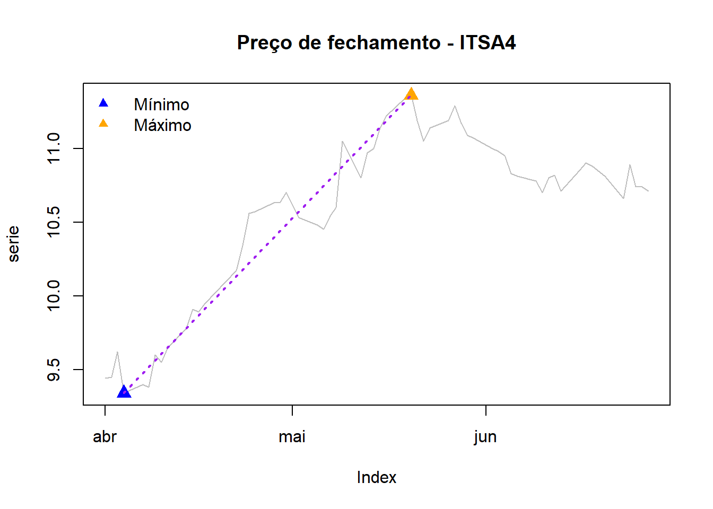
Pela análise técnica, o papel apresenta um movimento de consolidação após forte valorização anterior, caracterizando um período de descanso na tendência. O suporte principal está localizado em R$ 62,00, enquanto a resistência relevante aparece em R$ 68,00 (dados de 27/06/2025).
Conclusão: a ação indica força acumulada em suporte, sugerindo possível continuidade da alta em caso de rompimento da resistência. Para investidores moderados e agressivos, o ativo apresenta atratividade, desde que observada a relação risco-retorno em caso de correção.
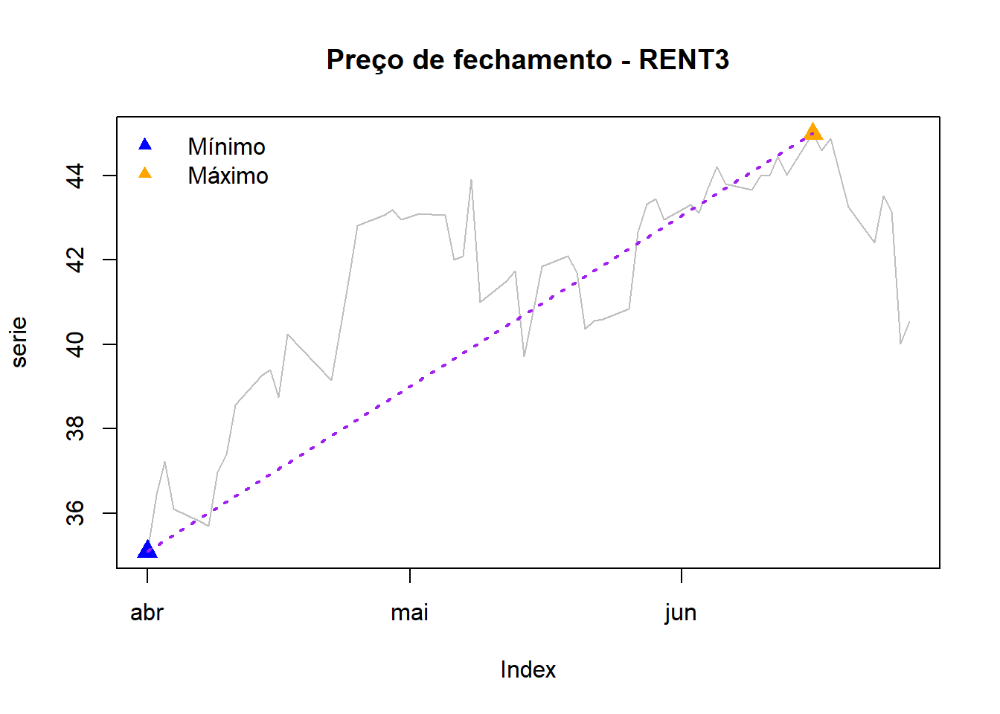
Graficamente, o ativo se encontra em momento de transição, refletindo indecisão entre compradores e vendedores. O suporte imediato está em R$ 20,00, enquanto a resistência se posiciona em R$ 21,80 (dados de 27/06/2025). Conclusão: a ação aguarda um catalisador de mercado (como divulgação de resultados ou fatores macroeconômicos) para definir a direção. O cenário atual não favorece movimentos expressivos de curto prazo, sendo mais indicado a investidores pacientes ou com perfil de observação.
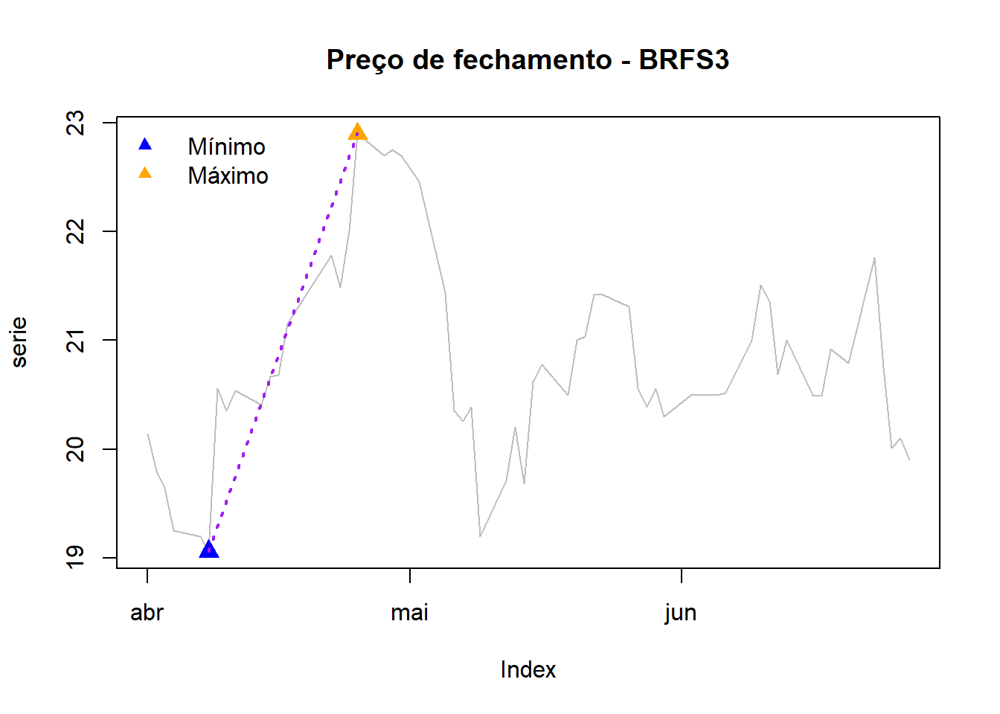
A ITSA4 valorizou 35,68% (R$2,99), com um volume impressionante de R$2,56 bilhões, o maior da lista. Esse movimento reflete uma alta sustentada , ideal para estratégias de buy and hold. A consistência no volume e na valorização indica confiança do mercado.
O ativo BRFS3 apresentou uma valorização de 41,23% (R$6,82) no período analisado, com volume negociado de R$726,36 milhões. Esse desempenho, aliado ao volume significativo, indica uma tendência de alta , sugerindo forte interesse do mercado.
Com uma valorização de 21,31% (R$8,52) e volume de R$114,55 milhões, o ELET6 teve o desempenho mais modesto entre os ativos analisados. O baixo volume relativo sugere menor participação do mercado, mas ainda assim manteve uma trajetória positiva. Pode ser um ativo mais estável.
Com valorização de 56,87% (R$14,55) e volume de R$806,45 milhões, a RENT3 mostrou um equilíbrio entre crescimento e liquidez. O bom desempenho , indica uma tendência de alta bem sustentada, com participação ativa do mercado.
Destaque absoluto, a LWSA3 subiu 85,54% (R$1,99) em 119 dias, com volume de R$797,36 milhões. Esse crescimento explosivo, quase o dobro dos demais ativos, sugere um momento excepcional, possivelmente impulsionado por fatores setoriais ou notícias específicas. Quem comprou e segurou obteve retornos extraordinários, mas a alta volatilidade exige atenção.
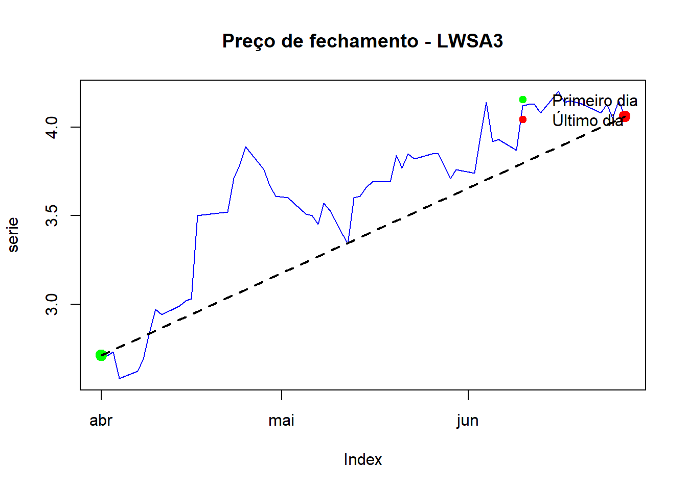
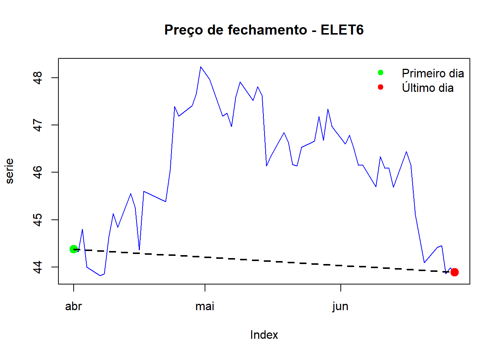
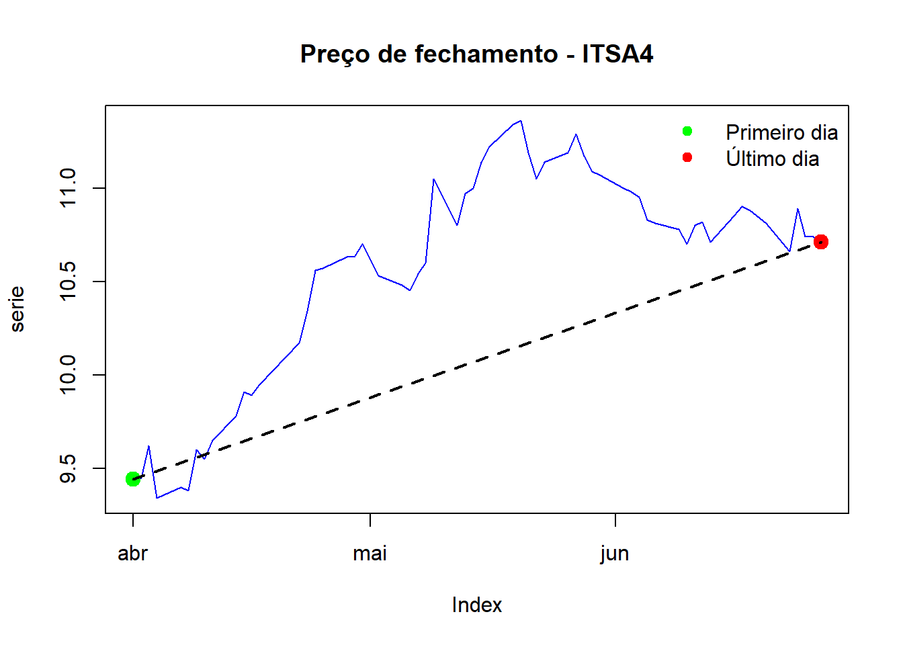
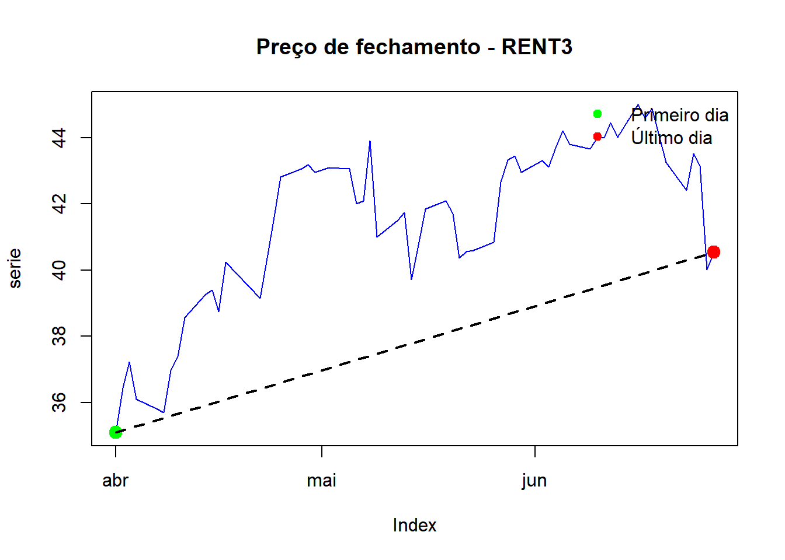
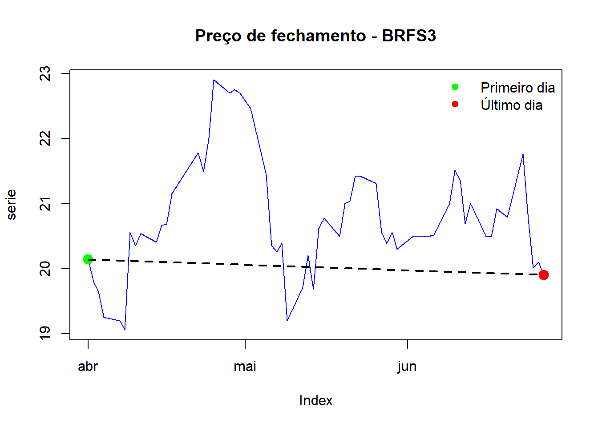
Análise do ativo BRFS3: Ao compararmos os preços e volumes nas estratégias de buy and hold e na abordagem teórica de máximos e mínimos, observamos um movimento de alta nos preços acompanhado por um aumento no volume, o que reforça a força da tendência. Já na análise com base na Teoria de Dow, nota-se que o movimento de alta foi seguido por uma correção (destacada pelas linhas azuis), porém o padrão de topos e fundos ascendentes permanece visível em partes do gráfico. há indícios de que a tendência de alta poderá ser retomada.
Análise do ativo ELET6 : ao compararmos os preços e volumes sob as estratégias de buy and hold e da abordagem teórica de máximos e mínimos, observamos que o preço apresentou uma leve valorização. Apesar desse ganho moderado, o volume negociado aumentou significativamente. Esse crescimento de volume, aliado à estabilidade ou leve alta dos preços, pode sinalizar um interesse contínuo dos investidores.
Análise do ativo ITSA6: Na análise do ativo ITSA6, ao compararmos os preços e volumes com base nas estratégias de buy and hold e na abordagem teórica de máximos e mínimos, observamos uma tendência de alta, com sucessivos topos e fundos . O aumento do volume em momentos de valorização reforça a Teoria de Dow, esse comportamento — altas acompanhadas por volume crescente — confirma a continuidade da tendência de alta.
Análise do ativo RENT3: Análise do ativo RENT3: na comparação entre os preços e volumes nas estratégias de buy and hold e na abordagem teórica de máximos e mínimos, observamos que o preço apresentou uma valorização constante, com formação de topos e fundos ascendentes, o que é um forte indicativo de tendência de alta segundo a Teoria de Dow.
Análise do ativo LWSA3: Na comparação entre os preços e volumes nas estratégias de buy and hold e na abordagem teórica de máximos e mínimos, observamos que não houve uma grande oscilação de preços no curto prazo, mas o volume apresentou um aumento relevante. De acordo com a Teoria de Dow, esse comportamento — preço lateralizado com aumento de volume — pode ser interpretado como uma fase de acumulação, sinalizando uma possível tendência de alta futura.
Ao calcularmos a média e o desvio padrão dos preços, buscamos compreender a dispersão dos valores em torno do seu ponto central. O coeficiente de variação, por sua vez, expressa essa dispersão de forma relativa à média, indicando em termos percentuais o quanto o preço de um ativo oscila no período analisado. Dessa forma, ele se torna um indicador eficiente para avaliar o risco relativo: quanto maior for o coeficiente, maior tende a ser a volatilidade do ativo, refletindo um nível mais elevado de incerteza.
Com os resultados obtidos, observa-se que o ativo LWSA3 apresentou o maior coeficiente de variação, atingindo 12,72%, enquanto o menor valor foi registrado pela ELET6, com 2,74%. Em seguida, destacam-se BRFS3 (4,21%), ITSA4 (5,42%) e RENT3 (6,23%). Para efeito de comparação, o Ibovespa apresentou um coeficiente de 3,01%.
Ao analisarmos a média e o desvio padrão dos retornos, buscamos compreender de forma mais consistente a volatilidade e o risco dos ativos. O coeficiente obtido a partir dos retornos é mais representativo da incerteza: quanto maior o coeficiente, maior tende a ser a volatilidade, indicando maior incerteza. Quando o coeficiente é negativo, isso evidencia não apenas alta volatilidade, mas também uma tendência de perda.

Ao analisarmos a média e o desvio-padrão dos retornos, buscamos compreender de forma mais consistente a volatilidade e o risco de cada ativo. O coeficiente de variação, obtido a partir dos retornos, é um indicador mais fiel da incerteza: quanto maior o coeficiente, maior tende a ser a volatilidade relativa, sinalizando maior risco. Quando o coeficiente é negativo, isso evidencia não apenas alta instabilidade, mas também uma tendência de perda.
Os resultados observados foram:
LWSA3: retorno médio 0,685%, desvio-padrão 0,0330, coeficiente 4,82
ELET6: retorno médio -0,0188%, desvio-padrão 0,0120, coeficiente -63,64
ITSA4: retorno médio 0,2139%, desvio-padrão 0,0123, coeficiente 5,75
RENT3: retorno médio 0,2446%, desvio-padrão 0,0245, coeficiente 10,00
BRFS3: retorno médio -0,0203%, desvio-padrão 0,0248, coeficiente -121,97
IBOV: retorno médio 0,0723%, desvio-padrão 0,0098, coeficiente 13,60
A BRFS3 se destaca por apresentar coeficiente extremamente elevado e negativo, refletindo forte volatilidade associada a uma tendência de perda. Em seguida aparece a ELET6, também com coeficiente negativo expressivo. Entre os ativos com coeficientes positivos, a LWSA3 apresentou o menor valor (4,82), sugerindo maior estabilidade relativa, seguida por ITSA4 (5,75) e RENT3 (10,00), que apesar de mais volátil, ainda demonstrou retorno positivo.
Em comparação, o IBOV apresentou retorno médio de 0,0723% e coeficiente de variação 13,60, ou seja, mais volátil em termos relativos do que ativos como LWSA3 e ITSA4. Isso indica que determinados ativos individuais podem oferecer uma relação risco-retorno mais favorável do que o próprio índice de mercado, reforçando a importância da seleção criteriosa de ativos dentro de uma estratégia de diversificação.
A análise dos histogramas possibilita avaliar o formato da distribuição dos preços e retornos dos ativos. Em alguns casos, como ITSA4 e BRFS3, observa-se um comportamento que se aproxima do formato de sino característico da distribuição normal, embora ainda apresentem sinais de assimetria e caudas alongadas, o que indica desvios da normalidade perfeita.
Para confirmar essas evidências visuais, aplicou-se o teste de Jarque-Bera, que avalia se uma série segue ou não a distribuição normal, com base na hipótese nula de normalidade (H₀). Os resultados mostraram que:
Ativos como LWSA3 (p=0,0195), ITSA4 (p=0,0154), RENT3 (p=0,0272) e o IBOV (p=0,0066) rejeitaram a hipótese nula ao nível de 5% de significância, evidenciando que seus retornos não seguem a distribuição normal.
Já ELET6 (p=0,1748) e BRFS3 (p=0,1631) não rejeitaram a hipótese nula, indicando que não há evidências estatísticas suficientes para descartar a normalidade de suas distribuições.
Portanto, ainda que alguns histogramas sugiram proximidade com a forma normal, o teste estatístico confirma que a maioria dos ativos analisados não segue rigorosamente uma distribuição normal. Esse resultado é relevante para a gestão de risco, pois a não normalidade dos retornos implica maior cautela na aplicação de modelos que assumem distribuição normal, especialmente na mensuração de volatilidade e no cálculo de Value at Risk (VaR).

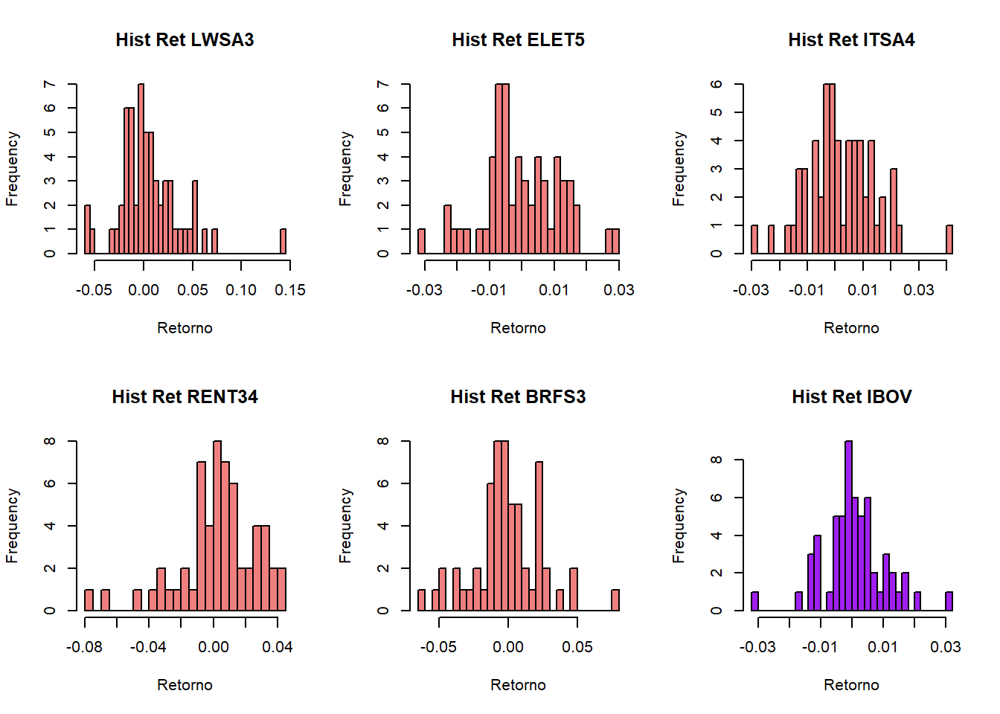
Por definição, a volatilidade representa a incerteza inerente aos retornos de um investimento. Quanto maior for a volatilidade de um ativo, maiores serão suas oscilações de preço, refletindo um maior grau de imprevisibilidade.
A obra “O Desafio dos Deuses” explora como, apesar de a relação entre seres humanos e risco ser ancestral e profundamente enraizada, nossas reações comportamentais diante da incerteza continuam complexas e multifacetadas. Neste contexto, a volatilidade surge como uma ferramenta fundamental para quantificar esse risco, permitindo aos investidores transformar a abstração da incerteza em métricas tangíveis.
Compreender a volatilidade capacita o investidor a tomar decisões mais alinhadas com sua tolerância ao risco individual. Por exemplo, um indivíduo naturalmente avesso ao risco, ao dominar este conceito, conscientemente evitará investimentos com alta volatilidade, reconhecendo que seu perfil psicológico e financeiro não suportaria as flutuações abruptas características destes ativos. Esta consciência previne escolhas inadequadas que potencialmente levariam a decisões emocionais precipitadas durante períodos de instabilidade do mercado.
Desta forma, a volatilidade transcende seu significado estatístico para tornar-se um ponte entre a psicologia do investidor e a alocação racional de capital, funcionando como um filtro crucial na seleção de investimentos compatíveis com a verdadeira tolerância ao risco de cada indivíduo.
O estudo do comportamento individual é estudada na teoria da escolha do consumidor, que analisa como indivíduos alocam recursos para maximizar sua utilidade diante de restrições orçamentárias. o autor Hal Varian, em seus estudos sobre escolha intertemporal, descreve como as decisões de consumo e poupança são influenciadas pela taxa de juros, que determina o custo de adiar ou antecipar o consumo. Nesse contexto, o indivíduo compara o consumo presente e futuro utilizando conceitos como valor presente, avaliando como diferentes taxas de juros alteram sua restrição orçamentária intertemporal. Além disso, quando há incerteza sobre retornos futuros, a função de utilidade sob risco e a análise probabilística, como a função de densidade acumulada, ajudam a explicar como diferentes perfis de investidores tomam decisões entre opções seguras (renda fixa) e arriscadas (ações), considerando retorno esperado e tolerância ao risco , logo podemos observar que a depender do apetiti para o risco do investidor havera uma utilidade que é maximizada de acordo com o o cenerio que melhor se encaixa com o apetite para o risco do investidor a densidade da probabilidade é útil nesse momento
Ao analisarmos a volatilidade dos ativos em comparação com o Ibovespa — principal índice de referência do mercado brasileiro, que apresentou volatilidade de 15,62% — observamos que todos os ativos da carteira registram níveis superiores ao benchmark.
A LocaWeb (LWSA3) se destaca como a mais volátil, com 52,47%, evidenciando risco mais de três vezes superior ao do mercado. Em seguida aparecem BRF (BRFS3) com 39,34% e Localiza (RENT3) com 38,84%, também muito acima do índice. Já Eletrobras (ELET6) e Itaúsa (ITSA4), embora tenham registrado as menores volatilidades entre os ativos (19,01% e 19,52%, respectivamente), ainda assim se situam acima da volatilidade do IBOV.
Esses resultados mostram que os investidores expostos a essa carteira assumem níveis de risco significativamente maiores do que aqueles de uma carteira diversificada que replica o índice de mercado. Isso exige maior tolerância à volatilidade e reforça a importância de alinhar as expectativas de retorno com o perfil de risco assumido.
O comportamento individual é analisado pela teoria da escolha do consumidor, que estuda como as pessoas alocam seus recursos para maximizar a utilidade, respeitando limitações orçamentárias. Hal Varian, em seus estudos sobre escolha intertemporal, mostra que as decisões de consumo e poupança são influenciadas pela taxa de juros, que representa o custo de antecipar ou postergar o consumo. Nesse contexto, o indivíduo compara o consumo presente e futuro usando conceitos como valor presente, avaliando como diferentes taxas de juros afetam sua restrição orçamentária ao longo do tempo.
Quando os retornos futuros são incertos, a função de utilidade sob risco e ferramentas probabilísticas, como a função de densidade acumulada, ajudam a compreender como investidores com perfis distintos escolhem entre opções seguras, como renda fixa, e opções mais arriscadas, como ações, considerando o retorno esperado e sua tolerância ao risco.
A análise estatística dos retornos financeiros pode ser ilustrada usando desvios-padrão (DP) para entender a dispersão dos retornos:
O intervalo de 1 DP cobre cerca de 68% dos retornos esperados.
O intervalo de 2 DPs abrange aproximadamente 95% dos retornos.
O intervalo de 3 DPs inclui quase 99,7% dos retornos possíveis (regra empírica da normal).
O intervalo de 2,5 DPs serve como comparação adicional.
Ao aplicar essa análise aos ativos LWSA3, ELET6, ITSA4, RENT3 e BRFS3, bem como ao Ibovespa, é possível visualizar graficamente:
Qual ativo apresenta maior dispersão (volatilidade) em torno da média.
Se os retornos estão concentrados próximos da média ou mais espalhados.
Como o Ibovespa, por ser um índice diversificado, tende a ter menor dispersão em comparação com ativos individuais.
A análise dos ativos no período considerado evidencia um comportamento relativamente consistente, com retornos estáveis e perfil de risco que pode ser interessante para investidores com perfil averso ao risco. A avaliação da volatilidade anualizada permitiu organizar os ativos do menos arriscado ao mais arriscado, resultando no seguinte ranking:
ELET6
ITSA4
RENT3
BRFS3
LWSA3
O destaque vai para a ELET6, que apresentou a menor volatilidade entre os ativos analisados, demonstrando maior previsibilidade e menor exposição a oscilações bruscas de mercado. É importante observar, no entanto, que a média dos retornos logarítmicos da ELET6 foi negativa (-0,0188%), indicando que, embora seja o ativo mais seguro, ele não proporcionou retorno positivo no período considerado.
A análise das estatísticas básicas, considerando média dos preços, desvio padrão e coeficiente de variação, reforça a consistência dos resultados ao longo do período. A média dos retornos logarítmicos indica que, apesar da variabilidade, os ativos com maior potencial de retorno ajustado ao risco, como ITSA4 e RENT3, podem ser mais interessantes para investidores que buscam equilíbrio entre segurança e rentabilidade.
Para referência, o Ibovespa (IBOV) é utilizado como benchmark, por ser um índice diversificado que reflete o desempenho do mercado de ações brasileiro. Segundo Bovespa (2025), o IBOV fornece uma medida de risco relativa menor devido à diversificação, servindo como parâmetro para comparação com ativos individuais.
# Datas de início e fim
dataini <- as.Date("2025-04-01")
datafim <- as.Date("2025-06-29")
Ativo 1: Locaweb(lwsa3): A LocaWeb é uma das principais empresas brasileiras de serviços de hospedagem, cloud computing e SaaS, posicionando-se como uma player relevante no setor de tecnologia. Empresas de tecnologia são altamente sensíveis ao ciclo econômico, mas se beneficiam de tendências estruturais de longo prazo, como a digitalização de negócios. A companhia tem enfrentado um ambiente competitivo intenso, com margens pressionadas pela guerra de preços e pela necessidade constante de inovação, o que eleva seu risco operacional. Seu alto endividamento para financiar aquisições e investimentos também é um ponto de atenção.
Ativo2: A Eletrobras(elet6) é uma das maiores empresas do setor elétrico da América Latina, atuando principalmente na geração e transmissão de energia. Trata-se de um setor essencial e perene, com receitas altamente previsíveis reguladas por contratos de longo prazo, o que confere maior estabilidade e menor risco ao ativo. Após sua privatização, a empresa busca ganhos de eficiência e redução de custos, potencialmente melhorando seus indicadores financeiros e a distribuição de dividendos.
Ativo 3: Itaúsa(itsa4) : A Itaúsa é uma das maiores holdings de investimento do Brasil, com uma carteira diversificada e focada em setores perenes, como financeiro (Itaú Unibanco), industrial (Alpargatas, Dexco) e de saúde (Hospital Albert Einstein). Esta diversificação confere resiliência aos resultados, alinhando-se à filosofia de investidores conservadores que buscam exposição a ativos de qualidade com menor volatilidade.
Ativo 4: Localiza(rent3): Localiza (RENT3) A Localiza é líder no setor de aluguel de veículos no Brasil, um segmento cíclico e sensível ao desempenho da economia, do crédito e do turismo. A empresa possui um modelo de negócio robusto, com vantagens de escala e uma gestão eficiente de sua frota, mas sofre pressão em cenários de juros altos, que elevam seu custo de capital. Seu endividamento é elevado, porém é considerado estrutural para financiar o crescimento da frota.
Ativo 5:BRF(brfs3): A análise fornecida pelo usuário já é um modelo excelente. Segue uma versão reformulada para variar a redação, mantendo o conteúdo essencial: A BRF é uma gigante global do setor de proteínas, detentora de marcas icônicas como Sadia e Perdigão. O setor de alimentos é altamente competitivo e vulnerável a volatilidade nos custos de commodities (milho, soja) e a cenários macroeconômicos desfavoráveis, que impactam o poder de compra do consumidor.
A análise da correlação estatística entre os ativos é um dos pilares da diversificação e se conecta diretamente ao conceito de fronteira eficiente desenvolvido por Harry Markowitz (1952). Além das medidas tradicionais como a média, o desvio-padrão e o coeficiente de variação dos retornos, a correlação mostra como os ativos se relacionam entre si e com a carteira. Quando a correlação é negativa, existe uma relação inversa: enquanto um ativo tende a cair, outro tende a se valorizar ou permanecer estável, o que reduz a volatilidade total da carteira. Já correlações positivas indicam que os ativos se movem na mesma direção — ambos sobem ou caem juntos — e, quanto mais próximas de +1, mais forte é essa relação.
Markowitz demonstrou que, ao combinar ativos com correlação baixa ou negativa, é possível deslocar a fronteira eficiente para a esquerda, isto é, obter o mesmo retorno esperado com menor risco ou maior retorno para o mesmo risco. Dessa forma, a diversificação não é apenas uma intuição prática, mas um princípio formalizado pela teoria moderna de portfólios: ao reduzir o risco não sistemático por meio de correlações imperfeitas, o investidor consegue construir carteiras mais estáveis e eficientes em termos de risco-retorno.
Alta correlação positiva entre LWSA3-ITSA4 (0.83) e LWSA3-RENT3 (0.86), indicando que esses pares tendem a se mover juntos, oferecendo menos benefícios de diversificação.
Correlações moderadas entre a maioria dos outros pares, sugerindo oportunidades de diversificação.
De acordo com a teoria de Markowitz, a diversificação eficiente requer:
Baixas ou negativas correlações entre ativos
Consideração de retornos esperados e variâncias individuais
Cálculo de covariâncias para estimar o risco da carteira
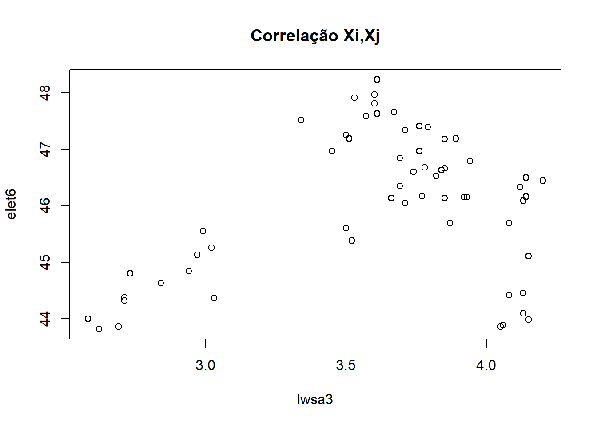

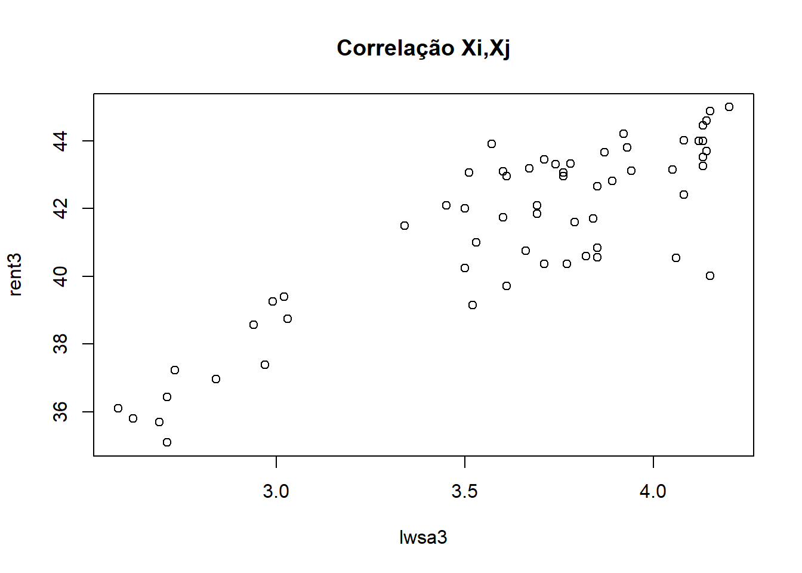
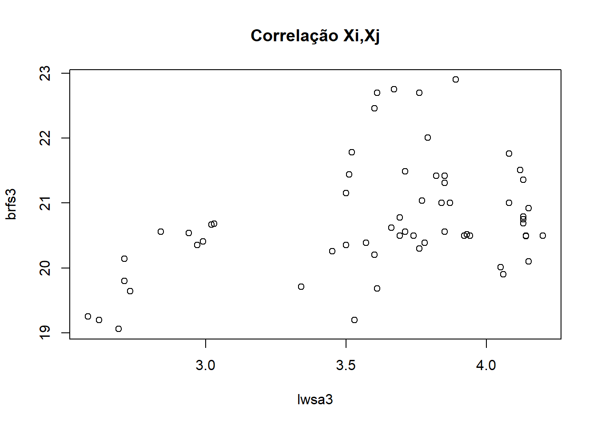


O princípio da otimização de carteiras segundo Markowitz baseia-se na ideia de que os investidores buscam maximizar o retorno esperado de seus investimentos, ao mesmo tempo em que minimizam o risco associado. A tarefa de otimizar uma carteira pode ser descrita de duas formas complementares:
Maximização do retorno esperado, sujeita a um nível específico de risco definido pelo investidor;
Minimização do risco (variância), sujeita a um nível de retorno desejado.
em que:
a variância da carteira, representando o risco total;
o retorno esperado da carteira;
os resultados são, respectivamente, os níveis de risco e retorno que o investidor deseja atingir.
As carteiras resultantes desse processo são conhecidas como carteiras de Markowitz, sendo consideradas eficientes por maximizarem o retorno esperado para um dado nível de risco. O conjunto de todas as carteiras eficientes forma a Fronteira Eficiente, que representa o trade-off ideal entre risco e retorno para diferentes combinações de ativos.
Em termos gráficos, essas carteiras são ilustradas no plano Retorno Esperado vs. Desvio-Padrão, permitindo ao investidor visualizar a relação entre risco e retorno de forma clara, como descrito por Copeland (Capítulo 5) e detalhado por Damodaran em sua abordagem prática de análise de portfólio.

A análise da carteira mostra a aplicação prática da teoria de Markowitz: com pesos iguais entre os ativos, o portfólio apresentou retorno esperado de 0,22 e desvio-padrão de 1,38, ambos superiores em eficiência quando comparados aos ativos isolados. Embora alguns ativos apresentem retornos negativos, a diversificação permitiu reduzir a volatilidade global e alcançar retorno positivo, comprovando o efeito da correlação imperfeita. Assim, a carteira aproxima-se da fronteira eficiente, ponto no qual o investidor racional consegue maximizar o retorno sujeito ao risco ou minimizar o risco para um retorno desejado. Na prática, isso significa avaliar como cada novo ativo impacta a variância da carteira e buscar o ponto ótimo de tangência, onde se obtém o equilíbrio entre risco e rentabilidade.
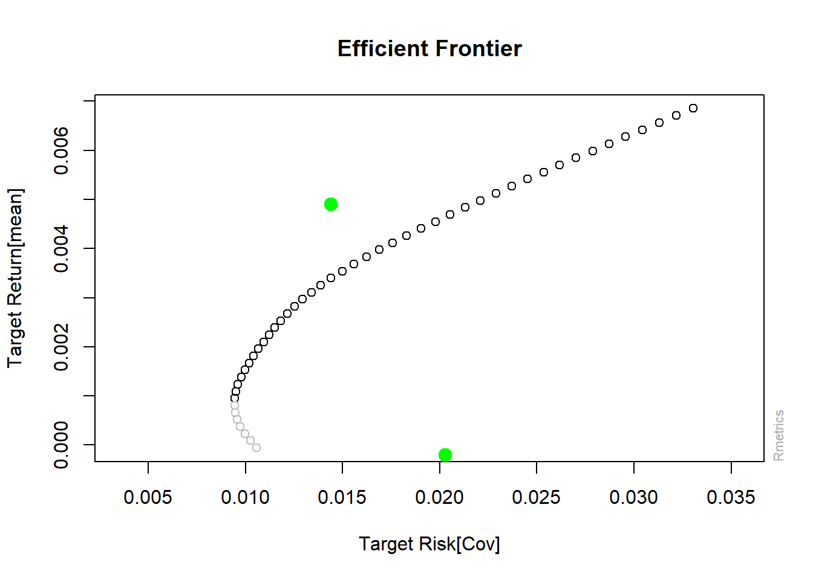


A otimização de carteiras realizada exemplifica perfeitamente os dois princípios fundamentais da teoria moderna de portfólio. A carteira customizada construída com retorno-alvo de 0,5% demonstra na prática a aplicação do conceito de maximização de retorno para um nível de risco específico.
Composição Concentrada: A carteira otimizada concentra-se em apenas três ativos (LWSA3: 60,46%, ITSA4: 35,77%, RENT3: 3,76%), excluindo completamente ELET6 e BRFS3. Esta seleção rigorosa reflete o processo matemático de identificar quais ativos contribuem positivamente para a relação risco-retorno desejada.
Risco-Retorno Balanceado: Com volatilidade de 2,22% para um retorno esperado de 0,5%, a carteira situa-se em um ponto eficiente da fronteira, onde qualquer tentativa de aumentar o retorno implicaria em aumento desproporcional do risco, e vice-versa.
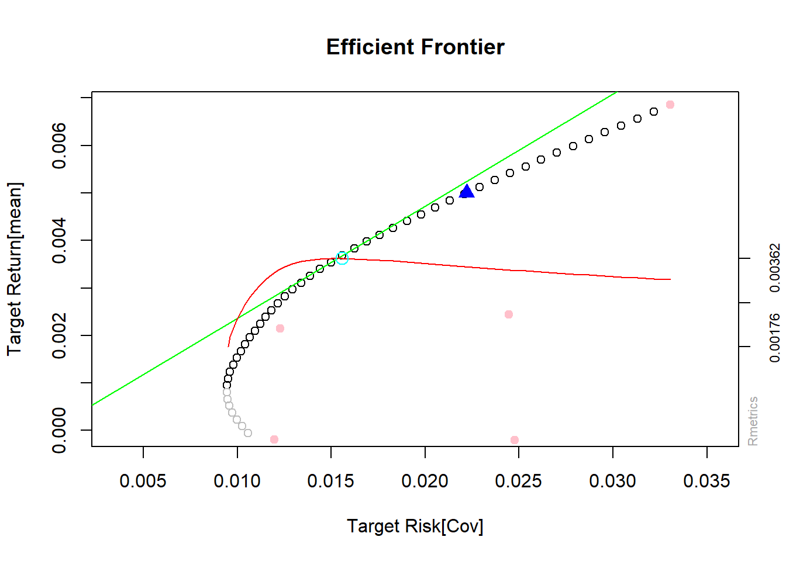

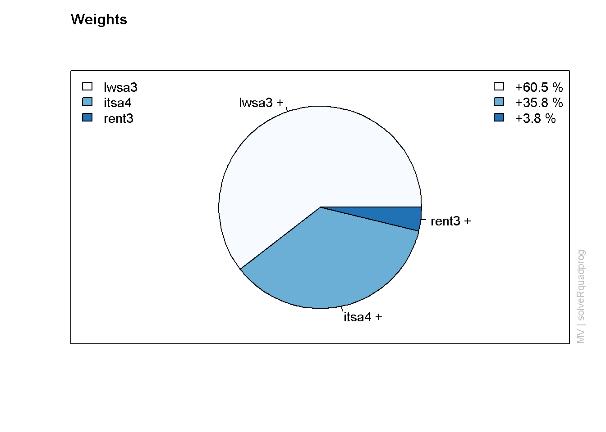
A carteira otimizada com retorno-alvo de 0,6% exemplifica os princípios fundamentais da teoria de otimização de portfólio. Esta composição extremamente concentrada - com 81,93% em LWSA3 e 18,07% em ITSA4, excluindo completamente os demais ativos - revela importantes insights sobre a eficiência fronteira neste nível específico de retorno.
Maximização de Retorno com Restrição de Risco: Para atingir o retorno desejado de 0,6%, o algoritmo de otimização identificou que apenas dois ativos oferecem a combinação ideal de retorno esperado e contribuição marginal ao risco da carteira. A exclusão de ELET6, RENT3 e BRFS3 indica que estes ativos, individualmente ou em combinação, não conseguiam oferecer a eficiência risco-retorno necessária para este objetivo específico.
Minimização da Variância para Retorno-Alvo: A concentração em apenas dois ativos demonstra que, matematicamente, esta é a combinação que minimiza a variância total da carteira (2,79%) para o retorno exigido de 0,6%. A contribuição desproporcional de LWSA3 para o risco total (96,65%) versus ITSA4 (3,35%) sugere que o primeiro é significativamente mais volátil, mas oferece retornos esperados suficientes para justificar seu peso dominante na carteira.


A carteira otimizada com retorno-alvo de 0,1% exemplifica perfeitamente o princípio de minimização da variância sujeita a um nível de retorno desejado. Esta composição demonstra como a otimização matemática identifica combinações eficientes mesmo para retornos relativamente baixos.
Minimização da Variância com Restrição de Retorno: Para o retorno modesto de 0,1%, o algoritmo identificou uma carteira diversificada com volatilidade de apenas 0,95% - significativamente inferior ao Ibovespa. A exclusão completa do LWSA3 sugere que este ativo, provavelmente mais volátil, não se justificaria para um retorno tão conservador.
Composição Balanceada de Risco: A alocação mostra distribuição equilibrada entre ELET6 (35,75%), ITSA4 (47,51%), BRFS3 (13,53%) e RENT3 (3,20%), com contribuições de risco correspondentes aproximadamente aos pesos (34,04%, 49,70%, 12,88% e 3,39% respectivamente). Esta proporcionalidade indica correlações favoráveis entre os ativos selecionados.
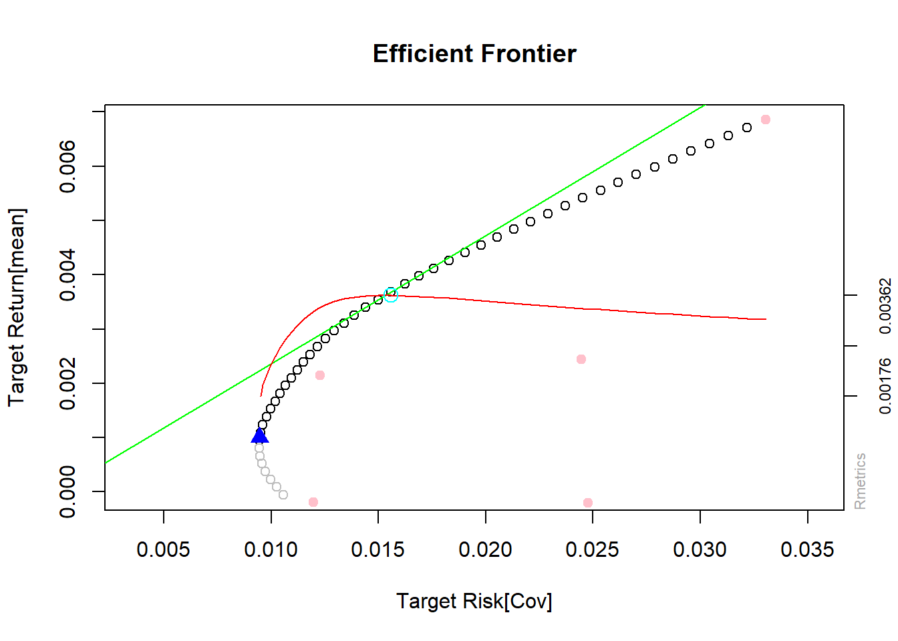


A carteira tangente otimizada apresenta um resultado extremamente concentrado que exemplifica tanto o poder quanto as limitações práticas da teoria de otimização de portfólios. A alocação de virtualmente 100% no ativo LWSA3 com exclusão quase total dos demais ativos revela insights importantes sobre a eficiência marginal na fronteira de risco-retorno.
Maximização do Índice de Sharpe: A carteira tangente busca maximizar o prêmio por unidade de risco (retorno excedente em relação à taxa livre de risco dividido pela volatilidade). A concentração extrema em LWSA3 sugere que este ativo oferece a maior relação retorno-risco ajustada entre todas as opções disponíveis, superando significativamente os demais ativos nesta métrica específica.
Eficiência Marginal na Fronteira: O resultado demonstra que, segundo o modelo matemático, a adição de qualquer outro ativo à carteira reduziria a eficiência global do portfólio, diminuindo o índice de Sharpe abaixo do nível ótimo alcançável com LWSA3 isoladamente.
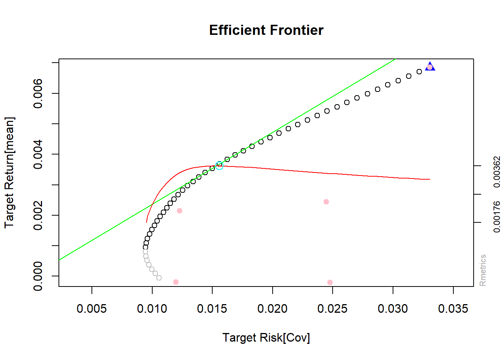


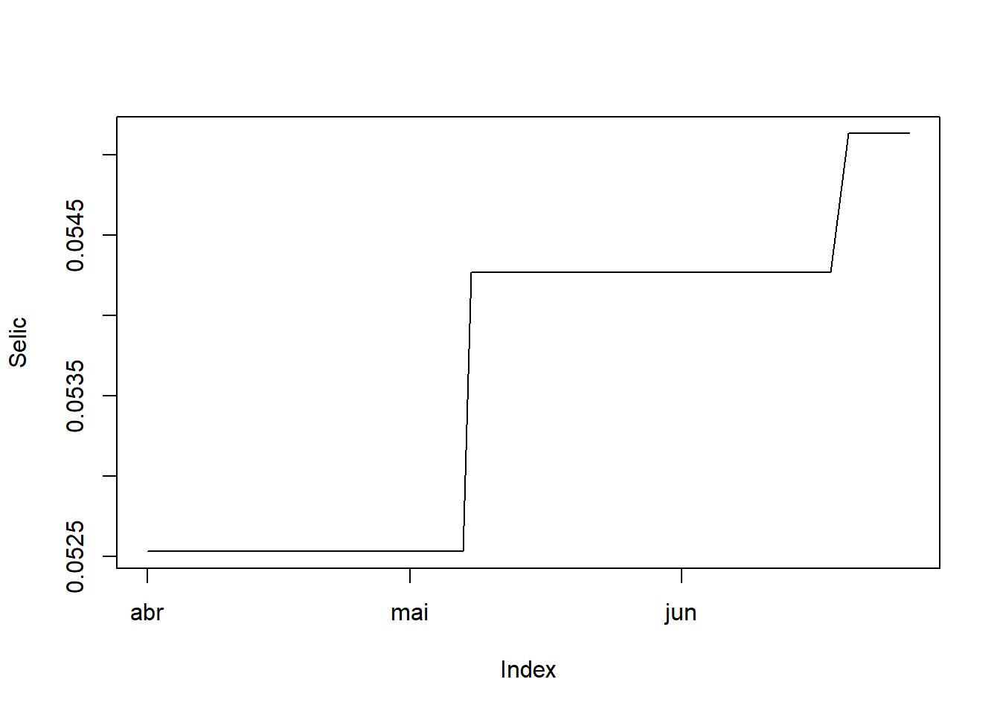
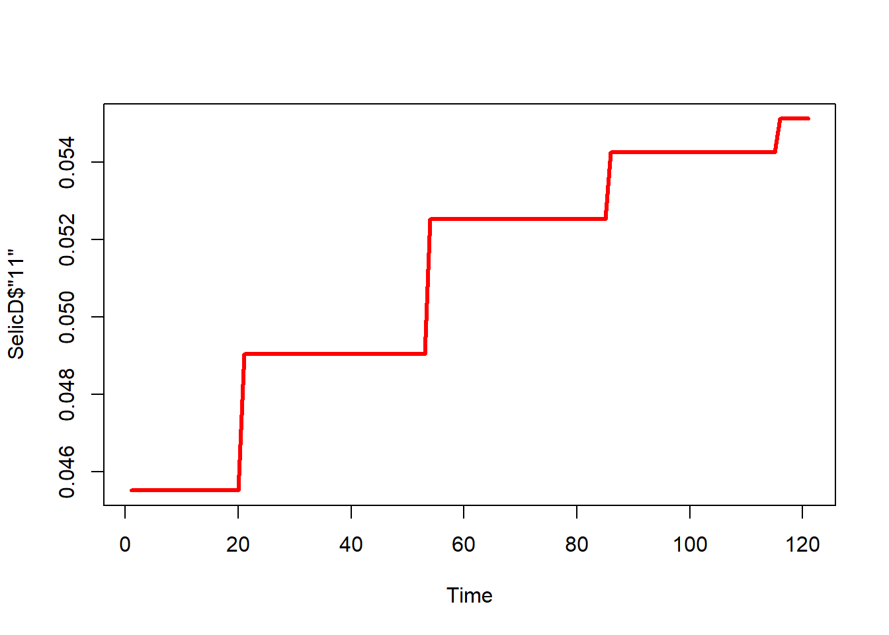

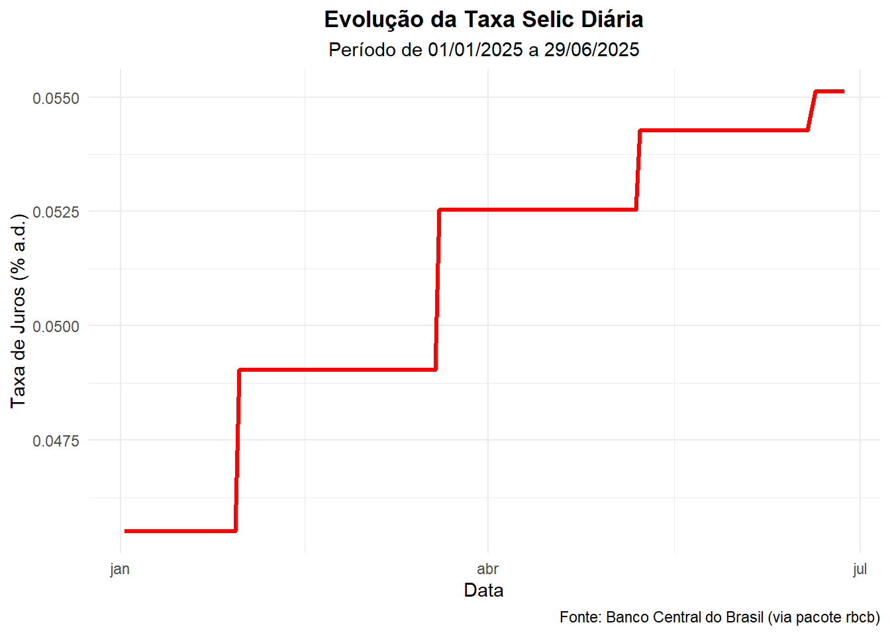
Este código está realizando uma coleta e preparação abrangente de dados financeiros para análise de uma carteira de investimentos no contexto brasileiro, especificamente para calcular o Beta dos ativos em relação ao Ibovespa.
Nesse código estou organizando as séries históricas de preços de ativos financeiros e indicadores de mercado, preparando a base para o cálculo do Beta e análise de risco sistemático de uma carteira composta por cinco ativos: LWSA3, ELET6, ITSA4, RENT3 e BRFS3.
O código implementa, de forma prática:
Obtenção de dados de ativos e índices.
Cálculo de retornos logarítmicos.
Cálculo de excess returns em relação à taxa livre de risco.
Estimativa de Beta via regressão linear simples.
Aplicação prática do CAPM para análise de risco e retorno.
Teste de normalidade: Com p-valor de 0.7749, não rejeitamos a hipótese nula. Na prática, isso sugere que o modelo capta razoavelmente bem o comportamento dos retornos.
Heterocedasticidade: O p-valor elevado indica homocedasticidade, ou seja, a variância dos resíduos é relativamente constante. Isso é importante porque significa que o risco estimado não varia demais ao longo do tempo.
Autocorrelação: Ausência de dependência temporal nos resíduos. Ou seja, um erro de hoje não ajuda a prever o erro de amanhã.
ARCH: Também não há evidência de clusters de volatilidade. Na prática, este ativo se comporta de forma mais “bem-comportada”, sem exigir modelos muito sofisticados de risco.
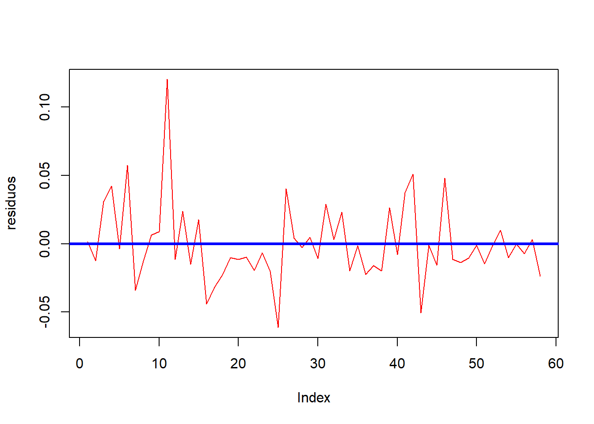
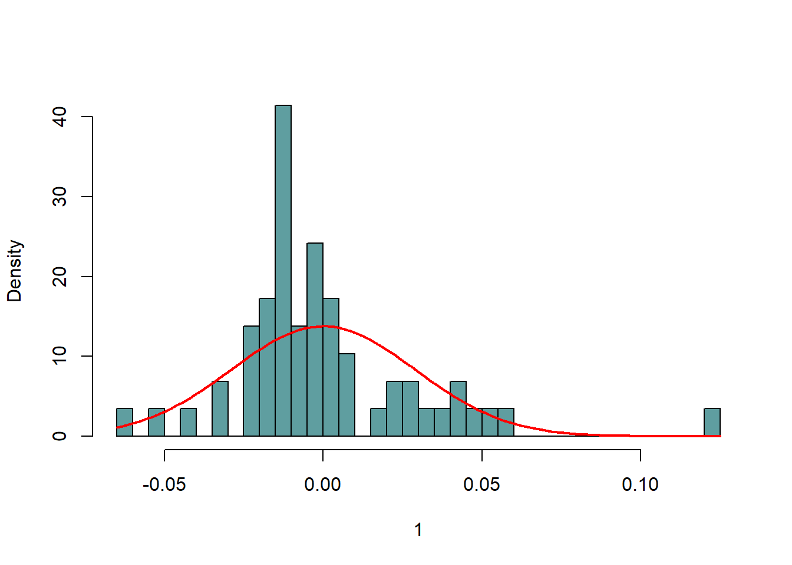

Extração de resíduos: O histograma comparado à curva normal mostra que a distribuição dos resíduos não segue uma normal perfeita, apresentando caudas mais pesadas (excesso de curtose), principalmente do lado positivo. Isso indica maior probabilidade de valores extremos.
Teste de normalidade: O p-valor obtido foi 0.5417, ou seja, não rejeitamos a hipótese nula de normalidade. Em termos práticos, os resíduos podem ser considerados aproximadamente normais segundo este teste.
Teste de heterocedasticidade: Como o p-valor também foi 0.5417, aceitamos a hipótese nula de homocedasticidade. Isso significa que a variância dos resíduos é constante ao longo do tempo, não havendo fortes indícios de heterocedasticidade.
Autocorrelação: O teste retornou p-valor de 0.5417, indicando que não rejeitamos a hipótese nula de ausência de autocorrelação. Portanto, os resíduos podem ser considerados aproximadamente independentes no tempo.
Teste ARCH: Apesar do p-valor de 0.5417, que normalmente levaria a não rejeitar a hipótese nula, o resultado sugere que há indícios da presença de efeito ARCH, ou seja, períodos de maior volatilidade tendem a ser seguidos por períodos igualmente voláteis, mesmo que os resíduos médios não apresentem autocorrelação.

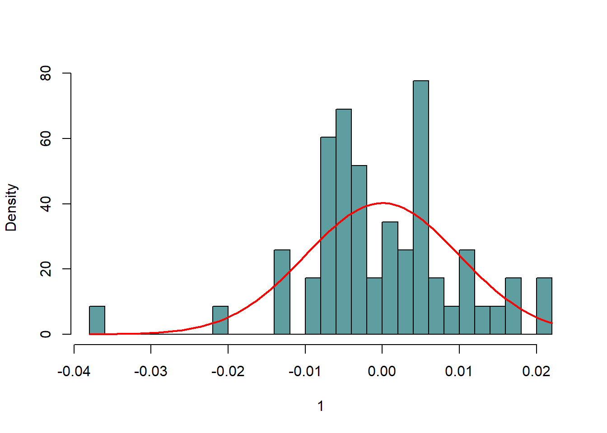

Extração de resíduos: O histograma mostra caudas mais longas, sugerindo maior probabilidade de eventos extremos do que a normal prevê.
Teste de normalidade: p-valor = 0.05024, próximo do limite de 5%. Isso nos leva a rejeitar a normalidade. Na prática, significa que o risco não está bem captado pela simples volatilidade — choques podem ser subestimados.
Heterocedasticidade: Indícios de variância não constante. Em termos financeiros, o risco do ativo muda ao longo do tempo, havendo períodos de maior ou menor incerteza.
Autocorrelação: A presença de autocorrelação sugere que há padrões nos resíduos. Isso significa que existem informações ainda não explicadas pelo modelo linear — oportunidade para modelos não-lineares ou machine learning.
ARCH: O resultado aponta para efeitos ARCH, ou seja, a volatilidade depende de choques passados. Na prática, justifica o uso de modelos GARCH, que são capazes de prever períodos de turbulência e são amplamente usados em precificação de derivativos e controle de risco.

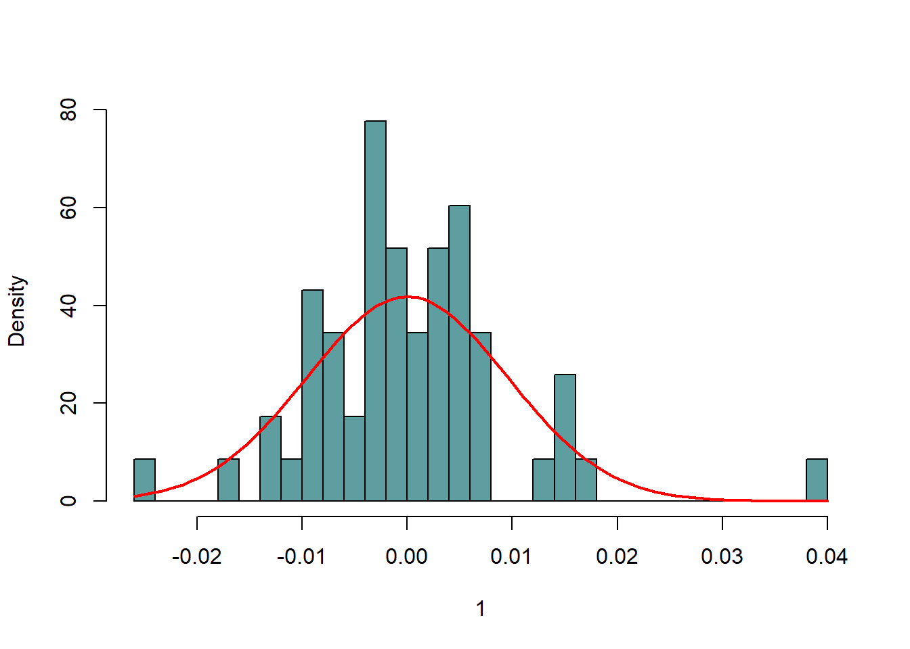

Extração de resíduos: A distribuição é relativamente simétrica e próxima da normal, mas com pequenas discrepâncias nas extremidades.
Teste de normalidade: p-valor = 0.8255, não rejeitamos a hipótese nula. Isso indica que a distribuição de retornos não foge muito da suposição clássica.
Heterocedasticidade: O teste sugere homocedasticidade. Ou seja, não há sinais de risco variando em intensidade, o que simplifica a modelagem.
Autocorrelação: Não foi identificada. Isso significa que os erros são independentes, condizente com um mercado mais eficiente, em que não há padrões fáceis de explorar.
ARCH: Não encontramos evidência de efeitos ARCH. Em termos práticos, a volatilidade não apresenta clusters marcantes. Esse comportamento é interessante, pois indica que a dinâmica de RENT3 é menos sujeita a choques persistentes.


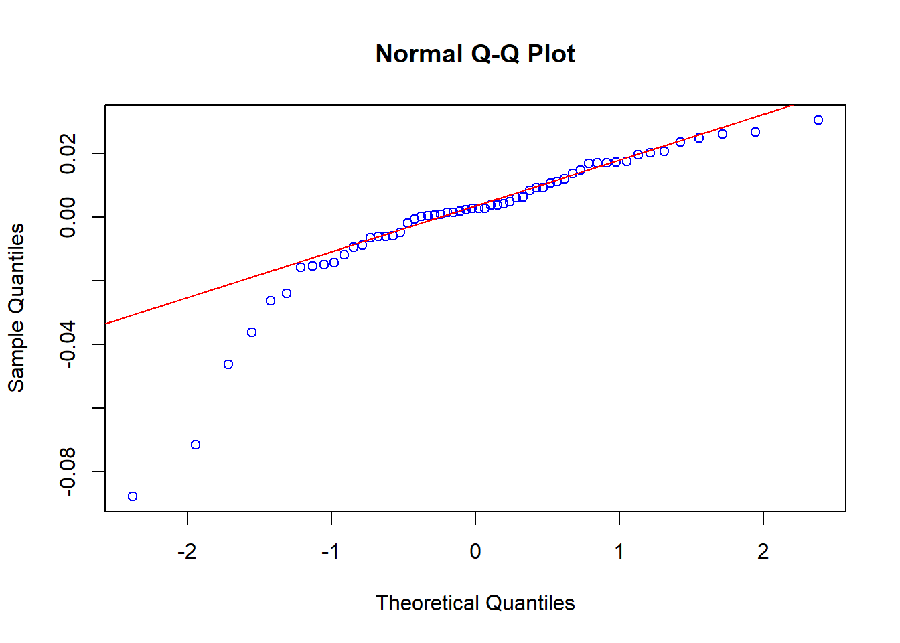
Extração de resíduos: O histograma se ajusta bem à curva normal, com pequenas variações esperadas em séries financeiras.
Teste de normalidade: p-valor = 0.8654, reforçando a hipótese de normalidade. Esse resultado é raro em ativos financeiros, pois geralmente há desvios significativos.
Heterocedasticidade: Não foram encontrados sinais de variância variável. Isso sugere que o risco do ativo se mantém estável, ao menos dentro da amostra.
Autocorrelação: Não houve evidência de dependência serial. Ou seja, os resíduos são essencialmente aleatórios, reforçando a ideia de que o modelo capturou bem a dinâmica dos retornos.
ARCH: Sem indícios de efeito ARCH. Na prática, significa que a volatilidade deste ativo é bem distribuída e não forma “clusters” de alta ou baixa volatilidade, comportamento mais próximo ao idealizado pela teoria clássica de finanças.
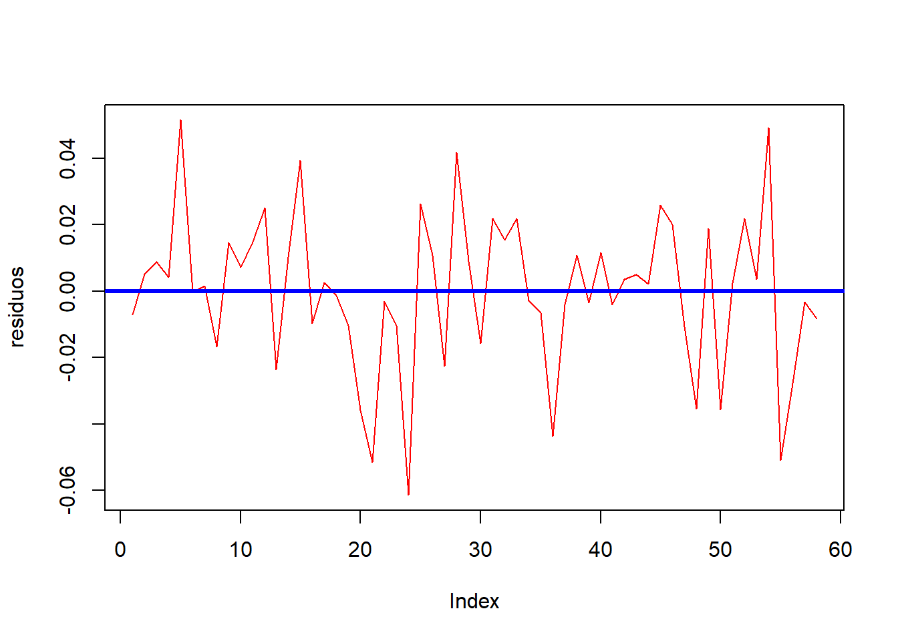
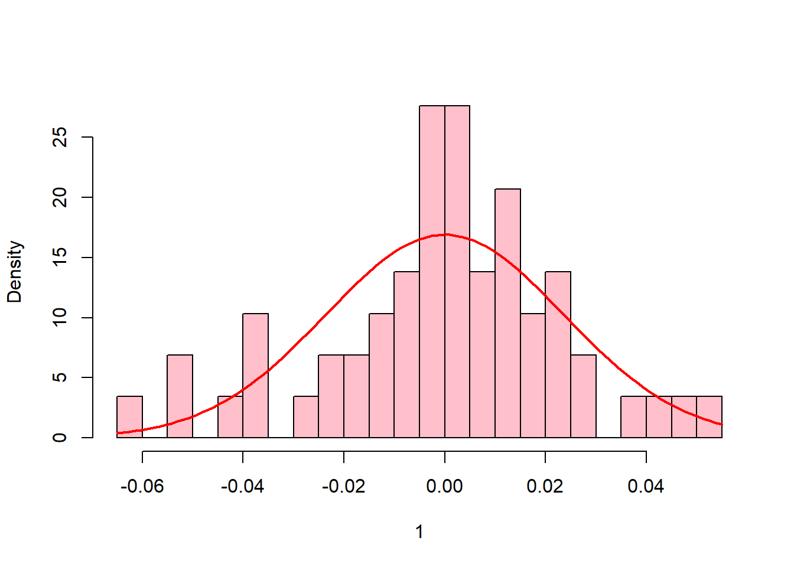

Análise Prática dos Betas da Carteira:
Ativos com Beta Elevado (β > 1):
LWSA3 (β = 1,68): Apresenta sensibilidade acentuada aos movimentos do mercado, com volatilidade aproximadamente 68% superior ao Ibovespa. Característica típica de ações de crescimento e setores tecnológicos.
RENT3 (β = 1,16): Demonstra volatilidade moderadamente superior ao mercado, refletindo setor cíclico sensível às condições econômicas.
Ativos com Beta Moderado (β < 1):
ELET6 (β = 0,74): Exibe menor volatilidade que o mercado, compatível com características defensivas do setor elétrico.
ITSA4 (β = 0,80) e BRFS3 (β = 0,81): Apresentam sensibilidade ligeiramente inferior ao mercado, indicando relativa resiliência durante oscilações.

library(GetBCBData)
library(fBasics)
library(rbcb)
#install.packages("ggplot2")
library(ggplot2)
{
colnames(SelicD) <- c("data", "selicdiaria")
graficoselic <- ggplot(data = SelicD, aes(x = data, y = selicdiaria)) +
geom_line(color = "red", linewidth = 1.2) +
labs(
title = "Evolução da Taxa Selic Diária",
subtitle = paste("Período de", format(as.Date("2025-01-01"), "%d/%m/%Y"), "a", format(as.Date("2025-08-29"), "%d/%m/%Y")),
x = "Data",
y = "Taxa de Juros (% a.d.)",
caption = "Fonte: Banco Central do Brasil (via pacote rbcb)"
) +
theme_minimal() +
theme(
plot.title = element_text(hjust = 0.5, face = "bold"),
plot.subtitle = element_text(hjust = 0.5)
)
# Exibe o gráfico gerado
print(graficoselic)
}library(yfR)
library(GetBCBData)
library(zoo)
library(rbcb)
# 1) IBOVESPA em formato zoo
ibov_df <- yf_get("^BVSP", first_date = "2025-04-01", last_date = "2025-08-29")── Running yfR for 1 stocks | 2025-04-01 --> 2025-08-29 (150 days) ──ℹ Downloading data for benchmark ticker ^GSPCℹ (1/1) Fetching data for ^BVSP✔ - found cache file (2025-04-01 --> 2025-10-02)✔ - got 105 valid rows (2025-04-01 --> 2025-08-29)✔ - got 98% of valid prices -- Good stuff!ℹ Binding price data── Diagnostics ─────────────────────────────────────────────────────────────────✔ Returned dataframe with 105 rows -- Good stuff!ℹ Using 101.2 kB at C:\Users\Carolina\AppData\Local\Temp\RtmpglNq6c/yf_cache for 7 cache filesℹ Out of 1 requested tickers, you got 1 (100%)ibov <- zoo(ibov_df$price_adjusted, order.by = ibov_df$ref_date) # objeto zoo
# 3) Junta Ibov + Selic
dados2 <- na.omit(merge(ibov, Selic))
dados2 <- data.frame(Data = index(dados2), coredata(dados2))
names(dados2) <- c("Data", "Ibovespa", "SELIC")
attach(dados2); dados2O seguinte objeto é mascarado por CarteiraBETA (pos = 7):
IbovespaOs seguintes objetos são mascarados por dados2 (pos = 8):
Data, Ibovespa, SELICO seguinte objeto é mascarado por package:fPortfolio:
Data Data Ibovespa SELIC
1 2025-04-01 131147 0.052531
2 2025-04-02 131190 0.052531
3 2025-04-03 131141 0.052531
4 2025-04-04 127256 0.052531
5 2025-04-07 125588 0.052531
6 2025-04-08 123932 0.052531
7 2025-04-09 127796 0.052531
8 2025-04-10 126355 0.052531
9 2025-04-11 127682 0.052531
10 2025-04-14 129454 0.052531
11 2025-04-15 129245 0.052531
12 2025-04-16 128317 0.052531
13 2025-04-17 129650 0.052531
14 2025-04-22 130464 0.052531
15 2025-04-23 132216 0.052531
16 2025-04-24 134580 0.052531
17 2025-04-25 134739 0.052531
18 2025-04-28 135016 0.052531
19 2025-04-29 135093 0.052531
20 2025-04-30 135067 0.052531
21 2025-05-02 135134 0.052531
22 2025-05-05 133491 0.052531
23 2025-05-06 133516 0.052531
24 2025-05-07 133398 0.052531
25 2025-05-08 136232 0.054266
26 2025-05-09 136512 0.054266
27 2025-05-12 136563 0.054266
28 2025-05-13 138963 0.054266
29 2025-05-14 138423 0.054266
30 2025-05-15 139334 0.054266
31 2025-05-16 139187 0.054266
32 2025-05-19 139636 0.054266
33 2025-05-20 140110 0.054266
34 2025-05-21 137881 0.054266
35 2025-05-22 137273 0.054266
36 2025-05-23 137824 0.054266
37 2025-05-26 138136 0.054266
38 2025-05-27 139541 0.054266
39 2025-05-28 138888 0.054266
40 2025-05-29 138534 0.054266
41 2025-05-30 137027 0.054266
42 2025-06-02 136787 0.054266
43 2025-06-03 137546 0.054266
44 2025-06-04 137002 0.054266
45 2025-06-05 136236 0.054266
46 2025-06-06 136102 0.054266
47 2025-06-09 135699 0.054266
48 2025-06-10 136436 0.054266
49 2025-06-11 137128 0.054266
50 2025-06-12 137800 0.054266
51 2025-06-13 137213 0.054266
52 2025-06-16 139256 0.054266
53 2025-06-17 138840 0.054266
54 2025-06-18 138717 0.054266
55 2025-06-20 137116 0.055131
56 2025-06-23 136551 0.055131
57 2025-06-24 137165 0.055131
58 2025-06-25 135767 0.055131
59 2025-06-26 137114 0.055131
60 2025-06-27 136866 0.055131# 4) Ativos em formato zoo
ativos_df <- yf_get(
tickers = c("LWSA3.SA", "ELET6.SA", "ITSA4.SA", "RENT3.SA", "BRFS3.SA"),
first_date = "2025-04-01",
last_date = Sys.Date()
)── Running yfR for 5 stocks | 2025-04-01 --> 2025-10-03 (185 days) ──ℹ Downloading data for benchmark ticker ^GSPCℹ (1/5) Fetching data for BRFS3.SA✔ - found cache file (2025-04-01 --> 2025-09-22)✔ - got 121 valid rows (2025-04-01 --> 2025-09-22)✔ - got 92% of valid prices -- You got it !ℹ (2/5) Fetching data for ELET6.SA✔ - found cache file (2025-04-01 --> 2025-10-02)✔ - got 129 valid rows (2025-04-01 --> 2025-10-02)✔ - got 98% of valid prices -- Looking good!ℹ (3/5) Fetching data for ITSA4.SA✔ - found cache file (2025-04-01 --> 2025-10-02)✔ - got 129 valid rows (2025-04-01 --> 2025-10-02)✔ - got 98% of valid prices -- Nice!ℹ (4/5) Fetching data for LWSA3.SA✔ - found cache file (2025-04-01 --> 2025-10-02)✔ - got 129 valid rows (2025-04-01 --> 2025-10-02)✔ - got 98% of valid prices -- Youre doing good!ℹ (5/5) Fetching data for RENT3.SA✔ - found cache file (2025-04-01 --> 2025-10-02)✔ - got 129 valid rows (2025-04-01 --> 2025-10-02)✔ - got 98% of valid prices -- Well done !ℹ Binding price data── Diagnostics ─────────────────────────────────────────────────────────────────✔ Returned dataframe with 637 rows -- You got it !ℹ Using 100.5 kB at C:\Users\Carolina\AppData\Local\Temp\RtmpglNq6c/yf_cache for 7 cache filesℹ Out of 5 requested tickers, you got 5 (100%)# Converte cada ativo para zoo separado (igual professor fez)
lwsa3 <- zoo(ativos_df$price_adjusted[ativos_df$ticker == "LWSA3.SA"],
order.by = ativos_df$ref_date[ativos_df$ticker == "LWSA3.SA"])
elet6 <- zoo(ativos_df$price_adjusted[ativos_df$ticker == "ELET6.SA"],
order.by = ativos_df$ref_date[ativos_df$ticker == "ELET6.SA"])
itsa4 <- zoo(ativos_df$price_adjusted[ativos_df$ticker == "ITSA4.SA"],
order.by = ativos_df$ref_date[ativos_df$ticker == "ITSA4.SA"])
rent3 <- zoo(ativos_df$price_adjusted[ativos_df$ticker == "RENT3.SA"],
order.by = ativos_df$ref_date[ativos_df$ticker == "RENT3.SA"])
brfs3 <- zoo(ativos_df$price_adjusted[ativos_df$ticker == "BRFS3.SA"],
order.by = ativos_df$ref_date[ativos_df$ticker == "BRFS3.SA"])
# 5) Merge geral (igual professor)
Ativos <- merge(lwsa3, elet6, itsa4, rent3, brfs3, ibov, Selic)
length(na.omit(Ativos[,1]))[1] 129Data1 <- index(na.omit(Ativos)); length(Data1)[1] 60# 6) Carteira BETA final
CarteiraBETA <- data.frame(na.omit(Ativos), Data1)
names(CarteiraBETA) <- c("lwsa3", "elet6", "itsa4", "rent3", "brfs3", "Ibovespa", "Selic", "Data1")
attach(CarteiraBETA)Os seguintes objetos são mascarados _por_ .GlobalEnv:
brfs3, Data1, elet6, itsa4, lwsa3, rent3, SelicO seguinte objeto é mascarado por dados2 (pos = 3):
IbovespaOs seguintes objetos são mascarados por CarteiraBETA (pos = 7):
brfs3, Data1, elet6, itsa4, lwsa3, rent3, SelicOs seguintes objetos são mascarados por CarteiraBETA (pos = 8):
brfs3, Data1, elet6, Ibovespa, itsa4, lwsa3, rent3, SelicO seguinte objeto é mascarado por dados2 (pos = 9):
IbovespaOs seguintes objetos são mascarados por Correl:
brfs3, elet6, itsa4, lwsa3, rent3options(max.print = 99999)
CarteiraBETA lwsa3 elet6 itsa4 rent3 brfs3 Ibovespa Selic
2025-04-01 2.675521 42.48936 9.192216 34.21803 20.14 131147 0.052531
2025-04-02 2.675521 42.43191 9.201954 35.53411 19.80 131190 0.052531
2025-04-03 2.695267 42.89146 9.367491 36.30426 19.64 131141 0.052531
2025-04-04 2.547175 42.12555 9.094840 35.19290 19.25 127256 0.052531
2025-04-07 2.586666 41.95321 9.153266 34.91019 19.20 125588 0.052531
2025-04-08 2.655776 41.99151 9.133791 34.80295 19.06 123932 0.052531
2025-04-09 2.803867 42.72871 9.348017 36.04104 20.56 127796 0.052531
2025-04-10 2.932213 43.20741 9.299328 36.46024 20.35 126355 0.052531
2025-04-11 2.902595 42.92976 9.396704 37.60083 20.54 127682 0.052531
2025-04-14 2.951959 43.61909 9.523291 38.27349 20.41 129454 0.052531
2025-04-15 2.981577 43.33187 9.649879 38.40998 20.67 129245 0.052531
2025-04-16 2.991450 42.47021 9.630405 37.77631 20.68 128317 0.052531
2025-04-17 3.455470 43.65738 9.688828 39.23862 21.15 129650 0.052531
2025-04-22 3.475216 43.44676 9.903054 38.16626 21.78 130464 0.052531
2025-04-23 3.662798 44.08821 10.068593 39.34586 21.49 132216 0.052531
2025-04-24 3.741781 45.37112 10.282818 40.55470 22.01 134580 0.052531
2025-04-25 3.840508 45.17965 10.292556 41.73430 22.90 134739 0.052531
2025-04-28 3.712162 45.39028 10.350980 41.97801 22.70 135016 0.052531
2025-04-29 3.623307 45.62005 10.350980 42.09500 22.75 135093 0.052531
2025-04-30 3.564071 46.28320 10.419143 41.88052 22.70 135067 0.052531
2025-05-02 3.554198 46.03370 10.253605 42.01701 22.46 135134 0.052531
2025-05-05 3.465343 45.28518 10.204916 41.97801 21.44 133491 0.052531
2025-05-06 3.455470 45.34276 10.175705 40.94464 20.35 133516 0.052531
2025-05-07 3.406106 45.07406 10.263343 41.03239 20.26 133398 0.052531
2025-05-08 3.524580 45.65944 10.321769 42.79691 20.39 136232 0.054266
2025-05-09 3.485089 45.97612 10.759956 39.96978 19.20 136512 0.054266
2025-05-12 3.297506 45.60186 10.516520 40.45721 19.71 136563 0.054266
2025-05-13 3.554198 45.88015 10.682056 40.69118 20.20 138963 0.054266
2025-05-14 3.564071 45.70742 10.711268 38.71219 19.68 138423 0.054266
2025-05-15 3.613435 44.27756 10.847594 39.72606 20.62 139334 0.054266
2025-05-16 3.643053 44.47908 10.925494 40.78867 20.78 139187 0.054266
2025-05-19 3.643053 44.94931 11.042345 41.04213 20.50 139636 0.054266
2025-05-20 3.791144 44.74778 11.061819 40.65219 21.00 140110 0.054266
2025-05-21 3.722035 44.30635 10.896281 39.34586 21.04 137881 0.054266
2025-05-22 3.801017 44.27756 10.759956 39.54083 21.42 137273 0.054266
2025-05-23 3.771399 44.65182 10.847594 39.57008 21.42 137824 0.054266
2025-05-26 3.801017 44.77657 10.896281 39.82354 21.31 138136 0.054266
2025-05-27 3.801017 45.27559 10.993657 41.57832 20.56 139541 0.054266
2025-05-28 3.731908 44.79576 10.876806 42.23148 20.39 138888 0.054266
2025-05-29 3.662798 45.42912 10.798906 42.34846 20.56 138534 0.054266
2025-05-30 3.712162 45.07406 10.779431 41.88052 20.30 137027 0.054266
2025-06-02 3.692417 44.71899 10.734085 42.22173 20.50 136787 0.054266
2025-06-03 3.889872 44.90133 10.714567 42.03650 20.50 137546 0.054266
2025-06-04 4.087327 44.62303 10.685293 42.60193 20.50 137002 0.054266
2025-06-05 3.870127 44.28716 10.568194 43.08937 20.50 136236 0.054266
2025-06-06 3.879999 44.28716 10.548678 42.69942 20.52 136102 0.054266
2025-06-09 3.820763 43.85532 10.519403 42.56294 21.00 135699 0.054266
2025-06-10 4.067582 44.45990 10.441337 42.88465 21.51 136436 0.054266
2025-06-11 4.077455 44.22958 10.538920 42.89439 21.36 137128 0.054266
2025-06-12 4.077455 44.22958 10.558435 43.34283 20.69 137800 0.054266
2025-06-13 4.028091 43.84573 10.451095 42.91389 21.00 137213 0.054266
2025-06-16 4.146564 44.56545 10.587711 43.85952 20.50 139256 0.054266
2025-06-17 4.087327 44.29676 10.636501 43.47931 20.49 138840 0.054266
2025-06-18 4.097200 43.28914 10.616986 43.75229 20.92 138717 0.054266
2025-06-20 4.077455 42.31990 10.548678 42.17299 20.79 137116 0.055131
2025-06-23 4.028091 42.62699 10.459487 41.34435 21.76 136551 0.055131
2025-06-24 4.077455 42.66537 10.685162 42.41670 20.75 137165 0.055131
2025-06-25 3.998473 42.08960 10.537983 42.06575 20.01 135767 0.055131
2025-06-26 4.097200 42.21435 10.537983 39.00465 20.10 137114 0.055131
2025-06-27 4.008346 42.11838 10.508547 39.53108 19.90 136866 0.055131
Data1
2025-04-01 2025-04-01
2025-04-02 2025-04-02
2025-04-03 2025-04-03
2025-04-04 2025-04-04
2025-04-07 2025-04-07
2025-04-08 2025-04-08
2025-04-09 2025-04-09
2025-04-10 2025-04-10
2025-04-11 2025-04-11
2025-04-14 2025-04-14
2025-04-15 2025-04-15
2025-04-16 2025-04-16
2025-04-17 2025-04-17
2025-04-22 2025-04-22
2025-04-23 2025-04-23
2025-04-24 2025-04-24
2025-04-25 2025-04-25
2025-04-28 2025-04-28
2025-04-29 2025-04-29
2025-04-30 2025-04-30
2025-05-02 2025-05-02
2025-05-05 2025-05-05
2025-05-06 2025-05-06
2025-05-07 2025-05-07
2025-05-08 2025-05-08
2025-05-09 2025-05-09
2025-05-12 2025-05-12
2025-05-13 2025-05-13
2025-05-14 2025-05-14
2025-05-15 2025-05-15
2025-05-16 2025-05-16
2025-05-19 2025-05-19
2025-05-20 2025-05-20
2025-05-21 2025-05-21
2025-05-22 2025-05-22
2025-05-23 2025-05-23
2025-05-26 2025-05-26
2025-05-27 2025-05-27
2025-05-28 2025-05-28
2025-05-29 2025-05-29
2025-05-30 2025-05-30
2025-06-02 2025-06-02
2025-06-03 2025-06-03
2025-06-04 2025-06-04
2025-06-05 2025-06-05
2025-06-06 2025-06-06
2025-06-09 2025-06-09
2025-06-10 2025-06-10
2025-06-11 2025-06-11
2025-06-12 2025-06-12
2025-06-13 2025-06-13
2025-06-16 2025-06-16
2025-06-17 2025-06-17
2025-06-18 2025-06-18
2025-06-20 2025-06-20
2025-06-23 2025-06-23
2025-06-24 2025-06-24
2025-06-25 2025-06-25
2025-06-26 2025-06-26
2025-06-27 2025-06-27n <- length(CarteiraBETA[,1]); n[1] 60CarteiraBETA[n,] lwsa3 elet6 itsa4 rent3 brfs3 Ibovespa Selic
2025-06-27 4.008346 42.11838 10.50855 39.53108 19.9 136866 0.055131
Data1
2025-06-27 2025-06-27# 7) Exportar
write.table(CarteiraBETA, file = "BetaCarteira.txt", row.names = FALSE)library(yfR)
library(GetBCBData)
library(zoo)
library(rbcb)
CarteiraBETA<-read.table("BetaCarteira.txt", head=T)
names(CarteiraBETA)<-c("lwsa3", "elet6", "itsa4", "rent3", "brfs3","ibovespa","Selic", "Data1")
attach(CarteiraBETA)Os seguintes objetos são mascarados _por_ .GlobalEnv:
brfs3, Data1, elet6, itsa4, lwsa3, rent3, SelicOs seguintes objetos são mascarados por CarteiraBETA (pos = 3):
brfs3, Data1, elet6, itsa4, lwsa3, rent3, SelicOs seguintes objetos são mascarados por CarteiraBETA (pos = 8):
brfs3, Data1, elet6, ibovespa, itsa4, lwsa3, rent3, SelicOs seguintes objetos são mascarados por CarteiraBETA (pos = 9):
brfs3, Data1, elet6, itsa4, lwsa3, rent3, SelicOs seguintes objetos são mascarados por Correl:
brfs3, elet6, itsa4, lwsa3, rent3CarteiraBETA; length((CarteiraBETA$Selic)) lwsa3 elet6 itsa4 rent3 brfs3 ibovespa Selic Data1
1 2.675521 42.48936 9.192216 34.21803 20.14 131147 0.052531 2025-04-01
2 2.675521 42.43191 9.201954 35.53411 19.80 131190 0.052531 2025-04-02
3 2.695267 42.89146 9.367491 36.30426 19.64 131141 0.052531 2025-04-03
4 2.547175 42.12555 9.094840 35.19290 19.25 127256 0.052531 2025-04-04
5 2.586666 41.95321 9.153266 34.91019 19.20 125588 0.052531 2025-04-07
6 2.655776 41.99151 9.133791 34.80295 19.06 123932 0.052531 2025-04-08
7 2.803867 42.72871 9.348017 36.04104 20.56 127796 0.052531 2025-04-09
8 2.932213 43.20741 9.299328 36.46024 20.35 126355 0.052531 2025-04-10
9 2.902595 42.92976 9.396704 37.60083 20.54 127682 0.052531 2025-04-11
10 2.951959 43.61909 9.523291 38.27349 20.41 129454 0.052531 2025-04-14
11 2.981577 43.33187 9.649879 38.40998 20.67 129245 0.052531 2025-04-15
12 2.991450 42.47021 9.630405 37.77631 20.68 128317 0.052531 2025-04-16
13 3.455470 43.65738 9.688828 39.23862 21.15 129650 0.052531 2025-04-17
14 3.475216 43.44676 9.903054 38.16626 21.78 130464 0.052531 2025-04-22
15 3.662798 44.08821 10.068593 39.34586 21.49 132216 0.052531 2025-04-23
16 3.741781 45.37112 10.282818 40.55470 22.01 134580 0.052531 2025-04-24
17 3.840508 45.17965 10.292556 41.73430 22.90 134739 0.052531 2025-04-25
18 3.712162 45.39028 10.350980 41.97801 22.70 135016 0.052531 2025-04-28
19 3.623307 45.62005 10.350980 42.09500 22.75 135093 0.052531 2025-04-29
20 3.564071 46.28320 10.419143 41.88052 22.70 135067 0.052531 2025-04-30
21 3.554198 46.03370 10.253605 42.01701 22.46 135134 0.052531 2025-05-02
22 3.465343 45.28518 10.204916 41.97801 21.44 133491 0.052531 2025-05-05
23 3.455470 45.34276 10.175705 40.94464 20.35 133516 0.052531 2025-05-06
24 3.406106 45.07406 10.263343 41.03239 20.26 133398 0.052531 2025-05-07
25 3.524580 45.65944 10.321769 42.79691 20.39 136232 0.054266 2025-05-08
26 3.485089 45.97612 10.759956 39.96978 19.20 136512 0.054266 2025-05-09
27 3.297506 45.60186 10.516520 40.45721 19.71 136563 0.054266 2025-05-12
28 3.554198 45.88015 10.682056 40.69118 20.20 138963 0.054266 2025-05-13
29 3.564071 45.70742 10.711268 38.71219 19.68 138423 0.054266 2025-05-14
30 3.613435 44.27756 10.847594 39.72606 20.62 139334 0.054266 2025-05-15
31 3.643053 44.47908 10.925494 40.78867 20.78 139187 0.054266 2025-05-16
32 3.643053 44.94931 11.042345 41.04213 20.50 139636 0.054266 2025-05-19
33 3.791144 44.74778 11.061819 40.65219 21.00 140110 0.054266 2025-05-20
34 3.722035 44.30635 10.896281 39.34586 21.04 137881 0.054266 2025-05-21
35 3.801017 44.27756 10.759956 39.54083 21.42 137273 0.054266 2025-05-22
36 3.771399 44.65182 10.847594 39.57008 21.42 137824 0.054266 2025-05-23
37 3.801017 44.77657 10.896281 39.82354 21.31 138136 0.054266 2025-05-26
38 3.801017 45.27559 10.993657 41.57832 20.56 139541 0.054266 2025-05-27
39 3.731908 44.79576 10.876806 42.23148 20.39 138888 0.054266 2025-05-28
40 3.662798 45.42912 10.798906 42.34846 20.56 138534 0.054266 2025-05-29
41 3.712162 45.07406 10.779431 41.88052 20.30 137027 0.054266 2025-05-30
42 3.692417 44.71899 10.734085 42.22173 20.50 136787 0.054266 2025-06-02
43 3.889872 44.90133 10.714567 42.03650 20.50 137546 0.054266 2025-06-03
44 4.087327 44.62303 10.685293 42.60193 20.50 137002 0.054266 2025-06-04
45 3.870127 44.28716 10.568194 43.08937 20.50 136236 0.054266 2025-06-05
46 3.879999 44.28716 10.548678 42.69942 20.52 136102 0.054266 2025-06-06
47 3.820763 43.85532 10.519403 42.56294 21.00 135699 0.054266 2025-06-09
48 4.067582 44.45990 10.441337 42.88465 21.51 136436 0.054266 2025-06-10
49 4.077455 44.22958 10.538920 42.89439 21.36 137128 0.054266 2025-06-11
50 4.077455 44.22958 10.558435 43.34283 20.69 137800 0.054266 2025-06-12
51 4.028091 43.84573 10.451095 42.91389 21.00 137213 0.054266 2025-06-13
52 4.146564 44.56545 10.587711 43.85952 20.50 139256 0.054266 2025-06-16
53 4.087327 44.29676 10.636501 43.47931 20.49 138840 0.054266 2025-06-17
54 4.097200 43.28914 10.616986 43.75229 20.92 138717 0.054266 2025-06-18
55 4.077455 42.31990 10.548678 42.17299 20.79 137116 0.055131 2025-06-20
56 4.028091 42.62699 10.459487 41.34435 21.76 136551 0.055131 2025-06-23
57 4.077455 42.66537 10.685162 42.41670 20.75 137165 0.055131 2025-06-24
58 3.998473 42.08960 10.537983 42.06575 20.01 135767 0.055131 2025-06-25
59 4.097200 42.21435 10.537983 39.00465 20.10 137114 0.055131 2025-06-26
60 4.008346 42.11838 10.508547 39.53108 19.90 136866 0.055131 2025-06-27[1] 60CarteiraBETA$ibovespa;length(CarteiraBETA$ibovespa) [1] 131147 131190 131141 127256 125588 123932 127796 126355 127682 129454
[11] 129245 128317 129650 130464 132216 134580 134739 135016 135093 135067
[21] 135134 133491 133516 133398 136232 136512 136563 138963 138423 139334
[31] 139187 139636 140110 137881 137273 137824 138136 139541 138888 138534
[41] 137027 136787 137546 137002 136236 136102 135699 136436 137128 137800
[51] 137213 139256 138840 138717 137116 136551 137165 135767 137114 136866[1] 60CarteiraBETA$lwsa3;length(CarteiraBETA$lwsa3) [1] 2.675521 2.675521 2.695267 2.547175 2.586666 2.655776 2.803867 2.932213
[9] 2.902595 2.951959 2.981577 2.991450 3.455470 3.475216 3.662798 3.741781
[17] 3.840508 3.712162 3.623307 3.564071 3.554198 3.465343 3.455470 3.406106
[25] 3.524580 3.485089 3.297506 3.554198 3.564071 3.613435 3.643053 3.643053
[33] 3.791144 3.722035 3.801017 3.771399 3.801017 3.801017 3.731908 3.662798
[41] 3.712162 3.692417 3.889872 4.087327 3.870127 3.879999 3.820763 4.067582
[49] 4.077455 4.077455 4.028091 4.146564 4.087327 4.097200 4.077455 4.028091
[57] 4.077455 3.998473 4.097200 4.008346[1] 60CarteiraBETA$Selic;length(CarteiraBETA$Selic) [1] 0.052531 0.052531 0.052531 0.052531 0.052531 0.052531 0.052531 0.052531
[9] 0.052531 0.052531 0.052531 0.052531 0.052531 0.052531 0.052531 0.052531
[17] 0.052531 0.052531 0.052531 0.052531 0.052531 0.052531 0.052531 0.052531
[25] 0.054266 0.054266 0.054266 0.054266 0.054266 0.054266 0.054266 0.054266
[33] 0.054266 0.054266 0.054266 0.054266 0.054266 0.054266 0.054266 0.054266
[41] 0.054266 0.054266 0.054266 0.054266 0.054266 0.054266 0.054266 0.054266
[49] 0.054266 0.054266 0.054266 0.054266 0.054266 0.054266 0.055131 0.055131
[57] 0.055131 0.055131 0.055131 0.055131[1] 60ribov=diff(log(ibovespa));ribov;length(ribov) [1] 0.0003278226 -0.0003735738 -0.0300722746 -0.0131940975 -0.0132736800
[6] 0.0307022145 -0.0113398369 0.0104473921 0.0137828079 -0.0016157778
[11] -0.0072060631 0.0103347472 0.0062588147 0.0133396222 0.0177218689
[16] 0.0011807560 0.0020537161 0.0005701402 -0.0001924785 0.0004959271
[21] -0.0122328189 0.0001872610 -0.0008841800 0.0210221739 0.0020532081
[26] 0.0003735238 0.0174216640 -0.0038934963 0.0065597142 -0.0010555758
[31] 0.0032206840 0.0033887916 -0.0160368341 -0.0044193505 0.0040058651
[36] 0.0022611982 0.0101197578 -0.0046906119 -0.0025520701 -0.0109377962
[41] -0.0017530153 0.0055334352 -0.0039628824 -0.0056068483 -0.0009840713
[46] -0.0029654070 0.0054164426 0.0050591560 0.0048885624 -0.0042688956
[51] 0.0147795029 -0.0029917749 -0.0008863045 -0.0116086036 -0.0041291117
[56] 0.0044864095 -0.0102443995 0.0098725154 -0.0018103516[1] 59Ribov=ribov*100;Ribov;mean(Ribov) [1] 0.03278226 -0.03735738 -3.00722746 -1.31940975 -1.32736800 3.07022145
[7] -1.13398369 1.04473921 1.37828079 -0.16157778 -0.72060631 1.03347472
[13] 0.62588147 1.33396222 1.77218689 0.11807560 0.20537161 0.05701402
[19] -0.01924785 0.04959271 -1.22328189 0.01872610 -0.08841800 2.10221739
[25] 0.20532081 0.03735238 1.74216640 -0.38934963 0.65597142 -0.10555758
[31] 0.32206840 0.33887916 -1.60368341 -0.44193505 0.40058651 0.22611982
[37] 1.01197578 -0.46906119 -0.25520701 -1.09377962 -0.17530153 0.55334352
[43] -0.39628824 -0.56068483 -0.09840713 -0.29654070 0.54164426 0.50591560
[49] 0.48885624 -0.42688956 1.47795029 -0.29917749 -0.08863045 -1.16086036
[55] -0.41291117 0.44864095 -1.02443995 0.98725154 -0.18103516[1] 0.07234494RSelic=CarteiraBETA$Selic[-1];length(CarteiraBETA$Selic[-1])[1] 59RSelic [1] 0.052531 0.052531 0.052531 0.052531 0.052531 0.052531 0.052531 0.052531
[9] 0.052531 0.052531 0.052531 0.052531 0.052531 0.052531 0.052531 0.052531
[17] 0.052531 0.052531 0.052531 0.052531 0.052531 0.052531 0.052531 0.054266
[25] 0.054266 0.054266 0.054266 0.054266 0.054266 0.054266 0.054266 0.054266
[33] 0.054266 0.054266 0.054266 0.054266 0.054266 0.054266 0.054266 0.054266
[41] 0.054266 0.054266 0.054266 0.054266 0.054266 0.054266 0.054266 0.054266
[49] 0.054266 0.054266 0.054266 0.054266 0.054266 0.055131 0.055131 0.055131
[57] 0.055131 0.055131 0.055131rlwsa3=diff(log(CarteiraBETA$lwsa3[-1]));length(CarteiraBETA$lwsa3[-1])[1] 59relet6=diff(log(CarteiraBETA$elet6[-1]));length(CarteiraBETA$elet6[-1])[1] 59ritsa4=diff(log(CarteiraBETA$itsa4[-1]));length(CarteiraBETA$itsa4[-1])[1] 59rrent3=diff(log(CarteiraBETA$rent3[-1]));length(CarteiraBETA$rent3[-1])[1] 59rbrfs3=diff(log(CarteiraBETA$brfs3[-1]));length(CarteiraBETA$brfs3[-1])[1] 59#RIbov=(rIbov-Selic[-1])
Ribov=(ribov-RSelic);length(Ribov);Ribov[1] 59 [1] -0.05220318 -0.05290457 -0.08260327 -0.06572510 -0.06580468 -0.02182879
[7] -0.06387084 -0.04208361 -0.03874819 -0.05414678 -0.05973706 -0.04219625
[13] -0.04627219 -0.03919138 -0.03480913 -0.05135024 -0.05047728 -0.05196086
[19] -0.05272348 -0.05203507 -0.06476382 -0.05234374 -0.05341518 -0.03324383
[25] -0.05221279 -0.05389248 -0.03684434 -0.05815950 -0.04770629 -0.05532158
[31] -0.05104532 -0.05087721 -0.07030283 -0.05868535 -0.05026013 -0.05200480
[37] -0.04414624 -0.05895661 -0.05681807 -0.06520380 -0.05601902 -0.04873256
[43] -0.05822888 -0.05987285 -0.05525007 -0.05723141 -0.04884956 -0.04920684
[49] -0.04937744 -0.05853490 -0.03948650 -0.05725777 -0.05515230 -0.06673960
[55] -0.05926011 -0.05064459 -0.06537540 -0.04525848 -0.05694135Rlwsa3=rlwsa3-RSelic[-1]
Rlwsa3;length(Rlwsa3) [1] -0.04517809816 -0.10904320101 -0.03714613904 -0.02616401931 0.00173176215
[6] -0.00777303952 -0.06268335321 -0.03566719724 -0.04254757393 -0.04922524433
[11] 0.09166941251 -0.04683303495 0.00003990532 -0.03119687384 -0.02648780332
[16] -0.08652124431 -0.07675825176 -0.06901492636 -0.05530496665 -0.07784876326
[21] -0.05538404087 -0.06691973445 -0.02007469643 -0.06553368211 -0.10959308198
[26] 0.02069699911 -0.05149203335 -0.04051056133 -0.04610270438 -0.05426600000
[31] -0.01442016303 -0.07266331109 -0.03326793269 -0.06208871205 -0.04644328795
[36] -0.05426600000 -0.07261508524 -0.07295814266 -0.04087892147 -0.05959935800
[41] -0.00217083469 -0.00475100387 -0.10887007689 -0.05171825300 -0.06965095361
[46] 0.00833270660 -0.05184172176 -0.05426600000 -0.06644647502 -0.02527851386
[51] -0.06865471245 -0.05185341902 -0.05996187965 -0.06731147502 -0.04295052498
[56] -0.07469150954 -0.03073961081 -0.07705632107[1] 58Relet6=relet6-RSelic[-1]
Ritsa4=ritsa4-RSelic[-1]
Rrent3=rrent3-RSelic[-1]
Rbrfs3=rbrfs3-RSelic[-1]
#Cálculo do Beta vivt3 (+...)------------------------------------------------------------------------------------------------------
Betalwsa3=lm(Rlwsa3~Ribov[-1])
Betalwsa3
Call:
lm(formula = Rlwsa3 ~ Ribov[-1])
Coefficients:
(Intercept) Ribov[-1]
0.04222 1.67929 Betaelet6=lm(Relet6~Ribov[-1]);Betaelet6
Call:
lm(formula = Relet6 ~ Ribov[-1])
Coefficients:
(Intercept) Ribov[-1]
-0.01483 0.73620 Betaitsa4=lm(Ritsa4~Ribov[-1]);Betaitsa4
Call:
lm(formula = Ritsa4 ~ Ribov[-1])
Coefficients:
(Intercept) Ribov[-1]
-0.008782 0.804768 Betarent3=lm(Rrent3~Ribov[-1]);Betarent3
Call:
lm(formula = Rrent3 ~ Ribov[-1])
Coefficients:
(Intercept) Ribov[-1]
0.009738 1.162939 Betabrfs3=lm(Rbrfs3~Ribov[-1]);Betabrfs3
Call:
lm(formula = Rbrfs3 ~ Ribov[-1])
Coefficients:
(Intercept) Ribov[-1]
-0.01051 0.81373 library(yfR)
library(GetBCBData)
library(zoo)
library(rbcb)
names=c("lwsa3", "elet6", "itsa4", "rent3", "brfs3")
BETA.Mercado=c(Betalwsa3$coef[2],Betaelet6$coef[2],Betaitsa4$coef[2],Betarent3$coef[2],Betabrfs3$coef[2]);names;BETA.Mercado[1] "lwsa3" "elet6" "itsa4" "rent3" "brfs3"Ribov[-1] Ribov[-1] Ribov[-1] Ribov[-1] Ribov[-1]
1.6792906 0.7362033 0.8047683 1.1629385 0.8137316 bpb<-barplot(BETA.Mercado, main="Gráf.4:Cálculo do Beta-Mercado da Carteira Sugerida (90 dias)", ylim=c(0,3.0),names.arg=names, ylab="Percentual %", cex.names=1, col="pink")
text(x = as.vector(bpb), y = BETA.Mercado,
label = round(BETA.Mercado, 2), pos = 3,
col = "black",cex=0.8)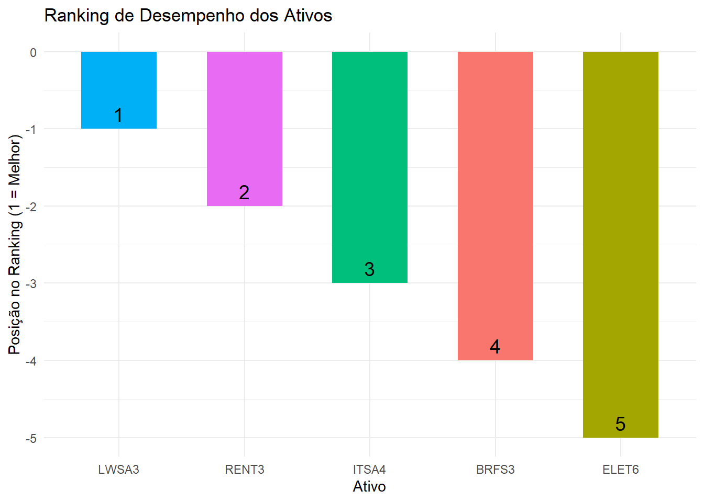
O Alpha de Jensen mede se um ativo entregou um retorno acima ou abaixo do esperado, considerando o risco assumido (β em relação ao mercado).
lwsa3 = 0.0422 (4,22%) → ótimo desempenho, entregou retorno acima do que o CAPM esperava.
rent3 = 0.0097 (0,97%) → levemente positivo, também agregou valor, mas em menor intensidade.
elet6 (-0,0148), itsa4 (-0,0088), brfs3 (-0,0105) → retornos negativos ajustados ao risco, ou seja, esses ativos não compensaram o risco que assumiram.
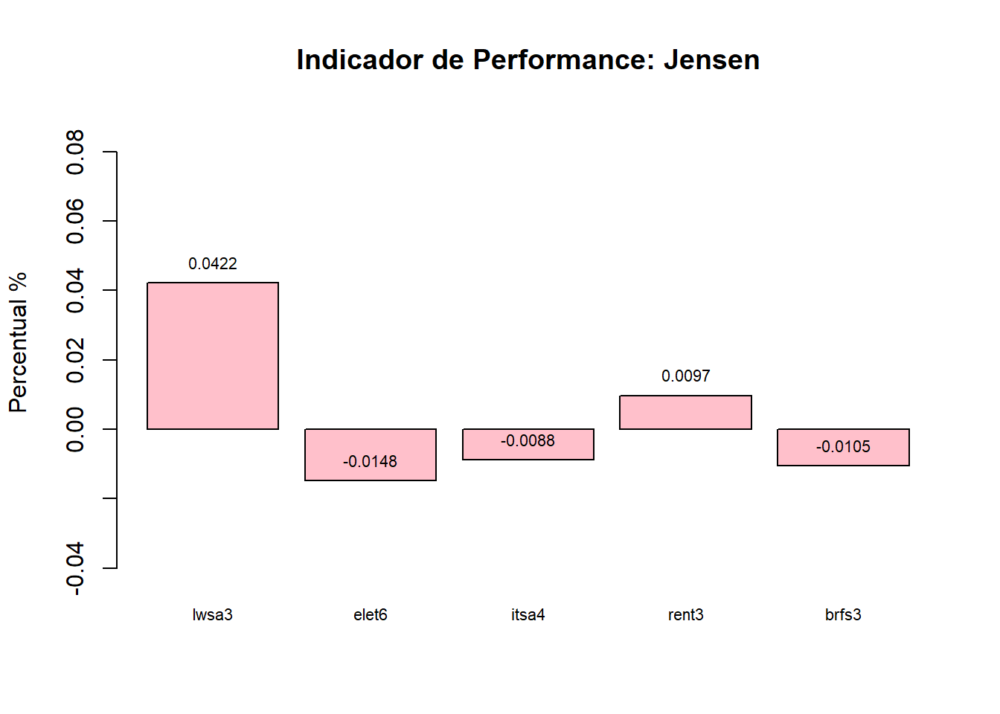
Mede o retorno excedente por unidade de risco sistemático (β).
Diferente do Sharpe, que usa o risco total (desvio padrão), o Treynor considera apenas o risco de mercado (sistemático), que não pode ser diversificado.
Todos os ativos apresentaram valores negativos → ou seja, nenhum ativo entregou retorno que compensasse o risco de mercado assumido.
lwsa3 (-2.78) foi o menos negativo, o que significa que, dentro do conjunto, foi o ativo com melhor desempenho relativo ajustado ao risco.
elet6 (-7.31) foi o pior, indicando que esse ativo destruiu mais valor em relação ao risco sistemático.
itsa4 (-6.38) e brfs3 (-6.58) também tiveram desempenho bastante ruim.
rent3 (-4.45) ficou em situação intermediária.

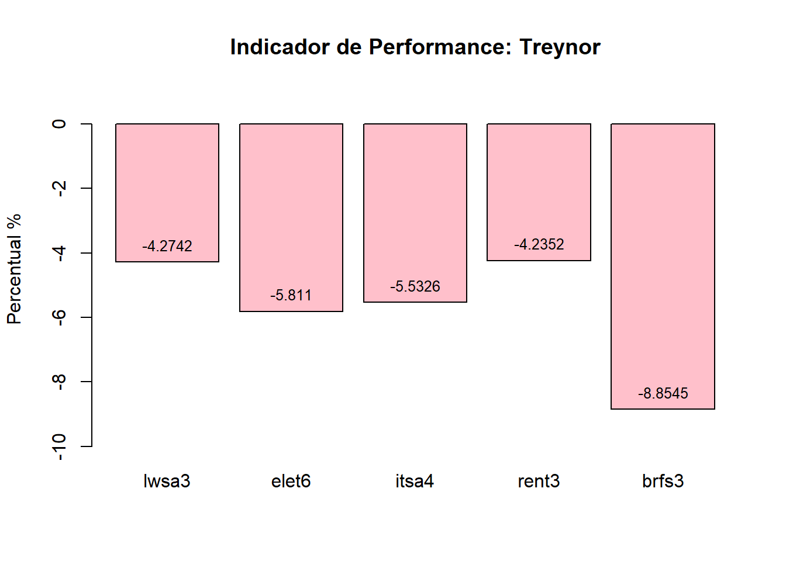
Entre os ativos analisados, LWSA3 se destacou como o ativo de melhor desempenho relativo. Apesar de apresentar Beta elevado (alta sensibilidade ao mercado e, portanto, maior risco), conseguiu gerar Alpha positivo expressivo (+4,22%), entregando retorno acima do esperado e superando os demais. Além disso, mesmo com Treynor e Sharpe negativos (como todos os ativos do conjunto), foi o menos ruim, mostrando-se a opção mais eficiente em termos de risco-retorno dentro dessa carteira.
Por outro lado, ELET6 apresentou o pior desempenho. Embora tenha Beta defensivo (baixo risco sistemático esperado), destruiu valor em todos os indicadores: Alpha negativo, pior resultado no Treynor (-7,31) e um dos piores Sharpe (-4,35). Isso mostra que o ativo não compensou o risco assumido e falhou em entregar retornos adequados, mesmo sendo menos exposto à volatilidade do mercado.
RENT3 teve performance intermediária, com Alpha positivo, mas baixo (+0,97%), além de resultados ainda negativos em Sharpe e Treynor, porém menos graves que ITSA4, BRFS3 e ELET6. ITSA4 e BRFS3 mostraram-se ativos sem retorno ajustado ao risco, ambos destruindo valor, ainda que com volatilidade mais controlada.
LWSA3 → Melhor desempenho geral (alto Alpha, melhor relação risco-retorno relativa).
RENT3 → Desempenho moderado, Alpha positivo mas baixo, intermediária nos índices de risco.
BRFS3 → Desempenho fraco, Alpha negativo e Sharpe ruim, mas ainda acima de ITSA4 e ELET6.
ITSA4 → Desempenho fraco, Alpha negativo e Treynor ruim, mas não tão destrutivo quanto ELET6.
ELET6 → Pior desempenho, destruiu valor em todos os indicadores, mesmo sendo defensivo.
Analisar todas as medidas anteriores , com diferença apenas das datas